<!doctype html>
<html lang="en">
<head>
  <meta charset="utf-8">
  <meta name="viewport" content="width=device-width, initial-scale=1">
  <title>arxiv digest — 2026-09-12</title>
  <style>
:root {
  --bg: #ffffff;
  --fg: #1f2328;
  --muted: #59636e;
  --border: #d0d7de;
  --card: #f6f8fa;
  --link: #0969da;
}
body {
  max-width: 980px;
  margin: 0 auto;
  padding: 2rem 1rem 5rem;
  font-family: -apple-system, BlinkMacSystemFont, "Segoe UI", Helvetica, Arial, sans-serif;
  line-height: 1.55;
  color: var(--fg);
  background: var(--bg);
}
a { color: var(--link); }
img { max-width: 100%; height: auto; }
pre, code { background: var(--card); border-radius: 6px; }
pre { padding: 1rem; overflow-x: auto; }
blockquote { border-left: 4px solid var(--border); padding-left: 1rem; color: var(--muted); }
details { margin: 0.6rem 0; }
summary { cursor: pointer; font-weight: 600; }
.paper-figures-scroll {
  display: flex;
  gap: 1rem;
  overflow-x: auto;
  overscroll-behavior-x: contain;
  padding: 0.75rem 0.25rem 1rem;
  margin: 1rem 0 1.25rem;
  border-top: 1px solid var(--border);
  border-bottom: 1px solid var(--border);
  scroll-snap-type: x proximity;
}
.paper-figure-card {
  flex: 0 0 min(260px, 72vw);
  scroll-snap-align: start;
  background: var(--card);
  border: 1px solid var(--border);
  border-radius: 12px;
  padding: 0.55rem;
}
.paper-figure-card img {
  display: block;
  width: 100%;
  max-height: 240px;
  object-fit: contain;
  background: white;
  border-radius: 8px;
}
.paper-figure-caption {
  display: block;
  margin-top: 0.5rem;
  color: var(--muted);
  font-size: 0.85rem;
}
.figure-strip-hint {
  color: var(--muted);
  font-size: 0.9rem;
  margin-bottom: -0.3rem;
}
</style>
  <!-- MathJax: renders $...$ inline math and $$...$$ display math, plus
       \(...\) and \[...\]. Loaded from the official CDN; works offline
       once cached. Configured to skip code/pre blocks so arxiv IDs that
       look like dollar amounts don't get mangled. -->
  <script>
    window.MathJax = {
      tex: {
        inlineMath: [['$', '$'], ['\\(', '\\)']],
        displayMath: [['$$', '$$'], ['\\[', '\\]']],
        processEscapes: true,
        processEnvironments: true
      },
      options: {
        skipHtmlTags: ['script', 'noscript', 'style', 'textarea', 'pre', 'code'],
        ignoreHtmlClass: 'tex2jax_ignore',
        processHtmlClass: 'tex2jax_process'
      }
    };
  </script>
  <script id="MathJax-script" async
    src="https://cdn.jsdelivr.net/npm/mathjax@3/es5/tex-chtml.js"></script>
</head>
<body>
<header style="background-color: #333; color: white; padding: 15px; margin-bottom: 20px;">
  <h1 style="margin: 0; font-size: 24px;">
    <a href="https://ochelpan.github.io/arXiv_clean/" style="color: white; text-decoration: none;">Main</a>
  </h1>
</header>

<h1>Daily arXiv Report</h1>

<hr>
<p>
<a href="index.html">← Index</a>
 · <a href="papers_06.html">← Previous</a>
</p>
<hr>

<h2>Papers 121–136</h2>
<p><a id="paper-2609.11633"></a></p>
<h3 id="phase-controlled-majorana-zero-modes-in-altermagnetic-topological-insulator-josephson-junctions"><a href="http://arxiv.org/abs/2609.11633v1">Phase-Controlled Majorana Zero Modes in Altermagnetic Topological-Insulator Josephson Junctions</a></h3>
<p><strong>Authors:</strong> Hao Dong, Xun-Jiang Luo, Xiao-Hong Pan, Xin Liu<br>
<strong>Type:</strong> theory · <strong>Category:</strong> other · <strong>PDF:</strong> <a href="https://arxiv.org/pdf/2609.11633v1">https://arxiv.org/pdf/2609.11633v1</a><br>
<strong>Analysis basis:</strong> full PDF text, analyzed in chunks
<strong>Topic relevance:</strong> <code>analog quantum simulation</code> <strong>3/5</strong> · <code>Keldysh / 2PI / non-Gaussian methods</code> <strong>1/5</strong></p>
<div class="figure-strip-hint">↔ Scroll figures horizontally</div>
<div class="paper-figures-scroll">
<figure class="paper-figure-card">
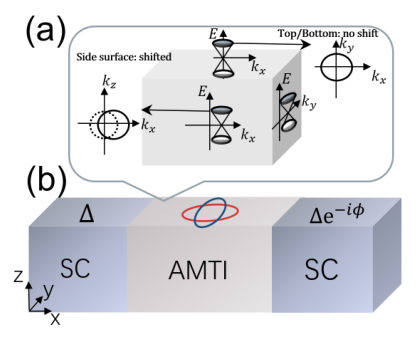
<figcaption class="paper-figure-caption"><b>Fig 1.</b> FIG. 1. Schematic of the anisotropic AMTI surface states and device geometry. (a) Facet-dependent Dirac-cone shifts induced by the altermagnetic order. The Dirac cones on the lateral surfaces acquire finite momentum shifts, whereas those on the top and bottom surfaces remain unshifted to leading order. (b) SC/3D AMTI/SC Josephson junction in which a three-dimensional AMTI forms the weak link between two conventional s-wave superconductors with phase difference ϕ.</figcaption>
</figure>
<figure class="paper-figure-card">
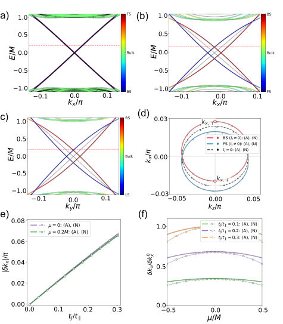
<figcaption class="paper-figure-caption"><b>Fig 2.</b> FIG. 2. Anisotropic surface spectra and the effective alter- magnetic momentum mismatch. (a)–(c) Band structures of AMTI slabs with surfaces normal to the z, y, and x direc- tions, respectively. Black curves show the spectra for tJ = 0, whereas the colored curves show those for finite tJ; the color scale encodes the localization of the states on the two op- posite surfaces. The Dirac cones on the lateral surfaces are shifted, whereas the z-surface Dirac cone remains unshifted to leading order. (d) Fermi contours on the two opposite y surfaces: the red and blue curves correspond to the front surface (FS) and back surface (BS) at finite tJ, respectively, while the black dashed curve shows the...</figcaption>
</figure>
<figure class="paper-figure-card">
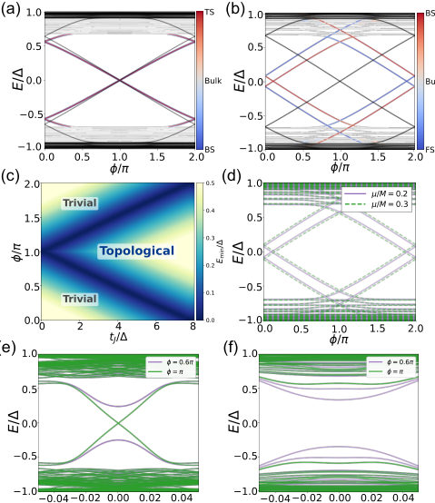
<figcaption class="paper-figure-caption"><b>Fig 3.</b> FIG. 3. Phase-driven topological transition in the SC/AMTI/SC junction. (a) and (b) Phase-dependent An- dreev spectra of the surface Josephson channels on the z and y facets, denoted JJ-z and JJ-y, at ky = 0 and kz = 0, re- spectively. In both panels, black curves show the spectra for tJ = 0, whereas colored curves show those for finite tJ; the colors encode the localization of the states on the two op- posite facets. The JJ-z crossing remains at ϕ = π, whereas the two JJ-y crossings are shifted in opposite directions. (c) Minimum positive excitation energy of JJ-y as a function of tJ and ϕ. The two shifted gap-closing lines delimit the inter- val in which the two y-facet Josephson masses...</figcaption>
</figure>
<figure class="paper-figure-card">
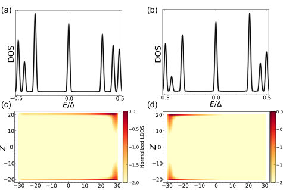
<figcaption class="paper-figure-caption"><b>Fig 4.</b> FIG. 4. Spatial distribution and phase control of Majorana zero modes. (a) and (b) DOS at superconducting phase dif- ferences ϕ = 0.6π and ϕ = 1.4π, respectively. Both spectra exhibit a pronounced zero-energy peak. (c) and (d) Zero- energy LDOS projected onto the y–z cross section by sum- ming over the x direction at ϕ = 0.6π and ϕ = 1.4π, respec- tively. The color scale represents log10[ρ(E = 0, r)/ρmax], where ρmax = maxr ρ(E = 0, r). The zero-energy spectral weight is localized at the hinge mass domain walls, consistent with the Majorana zero modes predicted by the surface-mass analysis. The occupied hinge pair is exchanged as the phase is tuned across ϕ = π. Parameters are as in Fig. 3.</figcaption>
</figure>
</div>

<p><strong>Summary.</strong> This theoretical work demonstrates how the d-wave altermagnetic order in a topological insulator creates distinct electronic properties on different crystal facets. By coupling this material into a Josephson junction, the authors show that tuning the superconducting phase bias can induce a superconducting mass inversion at the crystal hinges, thereby realizing and spatially controlling Majorana zero modes.</p>
<p><strong>Why it may be interesting.</strong> The ability to engineer topological superconductivity and control MZMs using geometric/structural properties (facets) and external biases ($\phi$) is highly relevant for realizing fault-tolerant quantum computing platforms.</p>
<details>
<summary>Detailed structure</summary>
<p><strong>Main problem.</strong> The research aims to exploit facet-dependent Andreev phase shifts to control topological superconductivity in a Josephson junction formed by an altermagnetic topological insulator.</p>
<p><strong>Main result.</strong> The study establishes a mechanism where the altermagnetic order induces distinct phase responses on different crystal facets, leading to a superconducting mass inversion at the facet hinges that hosts Majorana zero modes (MZMs).</p>
<p><strong>Method.</strong> The analysis involves deriving low-energy effective Hamiltonians by projecting the full lattice model onto the surface-state subspace and analyzing the resulting Andreev bound-state quantization conditions.</p>
<p><strong>Model / system.</strong> The system is a Josephson junction (SC/AMTI/SC) where the AMTI is modeled using a Hamiltonian incorporating d-wave altermagnetic order. The physics is analyzed by examining the Andreev spectra and the resulting superconducting gap structure.</p>
<p><strong>Key observables.</strong> Facet-dependent gap closings in Andreev spectra, spatial localization of MZMs, and the sign change of the effective superconducting mass across crystal facets.</p>
<p><strong>Important parameters / regimes.</strong> Superconducting phase bias ($\phi$), altermagnetic coupling strength ($t_J$), and the chemical potential ($\mu$).</p>
<p><strong>Assumptions / limitations.</strong> The analysis relies on projecting the full Hamiltonian onto the low-energy surface-state subspace and retaining only the leading low-energy Dirac expansion for the final bound-state expressions.</p>
<p><strong>Figures summary.</strong> Figures illustrate the schematic of anisotropic AMTI surface states showing facet-dependent Dirac-cone shifts, and the Josephson junction setup with phase difference $\phi$.</p>
<p><strong>Paper structure.</strong> The paper progresses by first modeling the AMTI surface states, showing how the altermagnetic term causes momentum shifts on lateral facets but not on top/bottom facets. It then applies this to the Josephson junction, deriving the phase-dependent Andreev spectra and demonstrating that the resulting mass inversion at the hinges hosts MZMs.</p>
</details>
<details>
<summary>Abstract</summary>
<p>We exploit facet-dependent Andreev phase shifts to control topological superconductivity with a phase bias in a three-dimensional altermagnetic topological-insulator Josephson junction. In the weak link between two conventional s-wave superconductors, the d-wave altermagnetic order produces facet-dependent momentum shifts of the surface Dirac cones. The resulting net momentum of the states involved in Andreev reflection generates additional propagation phases that differ between facets. Consequently, the facet-resolved Andreev spectra exhibit gap closings at distinct phase biases, giving rise to topological superconducting regimes that host Majorana zero modes(MZMs). We further show that tuning the phase bias controls the spatial localization of these modes. The associated topological superconducting transitions are only weakly affected by moderate variations in the chemical potential, obviating the need for fine-tuning to the Dirac point. Our results establish a platform for realizing and spatially controlling MZMs by tuning the superconducting phase bias in altermagnetic topological-insulator Josephson junctions.</p>
</details>
<p><sub><a href="#top">↑ back to top</a></sub></p>

<p><a id="paper-2609.10720"></a></p>
<h3 id="moire-topology-in-twisted-structures-with-noncollinear-spin-orbit-coupling"><a href="http://arxiv.org/abs/2609.10720v1">Moiré Topology in Twisted Structures with Noncollinear Spin-Orbit Coupling</a></h3>
<p><strong>Authors:</strong> Xilong Xu, Liangtao Peng, Shaffique Adam, Li Yang<br>
<strong>Type:</strong> theory · <strong>Category:</strong> strongly correlated electrons · <strong>PDF:</strong> <a href="https://arxiv.org/pdf/2609.10720v1">https://arxiv.org/pdf/2609.10720v1</a><br>
<strong>Analysis basis:</strong> full PDF text, analyzed in chunks
<strong>Topic relevance:</strong> <code>analog quantum simulation</code> <strong>3/5</strong></p>
<div class="figure-strip-hint">↔ Scroll figures horizontally</div>
<div class="paper-figures-scroll">
<figure class="paper-figure-card">
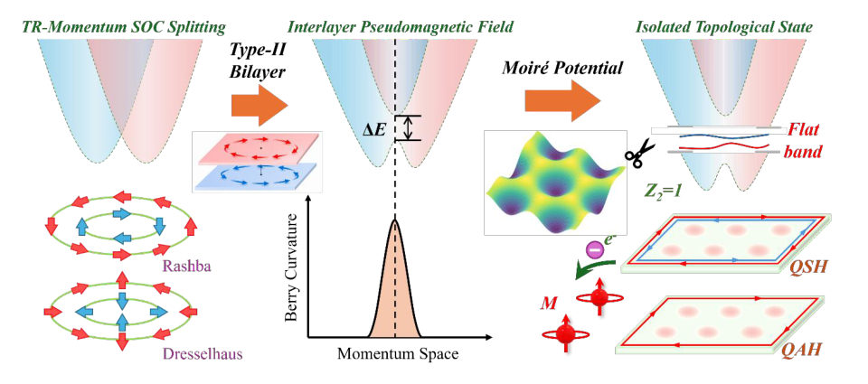
<figcaption class="paper-figure-caption"><b>Fig 1.</b> Figure 1. Schematic illustration of moiré engineering artificial type-II SOC bilayers to realize topological flat bands and correlated states.</figcaption>
</figure>
<figure class="paper-figure-card">
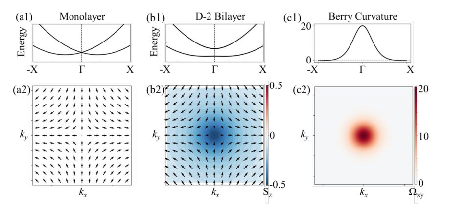
<figcaption class="paper-figure-caption"><b>Fig 2.</b> Figure 2. Model results of monolayer and D-2 bilayer Dresselhauses-SOC structures. Band structures and spin textures of the effective model in monolayer (a) and bilayer (b) Dresselhauses SOC. (c) Berry curvature around Γ point in D-2 system.</figcaption>
</figure>
<figure class="paper-figure-card">
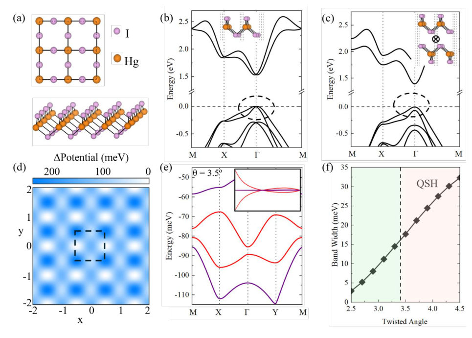
<figcaption class="paper-figure-caption"><b>Fig 3.</b> Figure 3. Twisted Square-lattice HgI2 moiré structure. (a) Top and side view of monolayer square- lattice HgI2. (b) Electronic band structure of monolayer HgI2, focusing on low-energy states near band edges. (c) Electronic band structure of bilayer HgI2. Inset is the side view of D-2 homobilayer, and the cross symbol marks the inversion center. (d) Moiré potential Δ(𝒓) of twisted D-2 bilayer HgI2. The moiré period along x and y directions is given by 𝐿𝑀= 𝑎/[2sin(𝜃/2)], where 𝑎 is the optimized in-plane lattice constant of monolayer HgI₂. This corresponds to a moiré length scale of approximately 7 nm. (e) Moiré miniband dispersion along high-symmetry lines of twisted D-2 bilayer HgI2. Inset...</figcaption>
</figure>
<figure class="paper-figure-card">
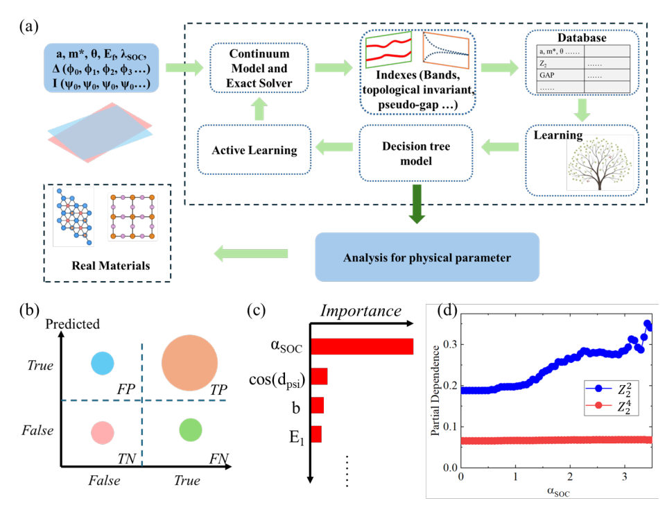
<figcaption class="paper-figure-caption"><b>Fig 4.</b> Figure 4. Physics-informed ML workflow for twisted SOC moiré systems. (a) Schematic of the physics-informed ML surrogate-model workflow. (b) Illustration of classification performance using a confusion-matrix-style diagram (used together with MCC as the main metric. TP: True Positive, TN: True Negative, FP: False Positive, FN: False Negative). (c) Feature-importance ranking extracted from the trained model, highlighting the dominant role of SOC-related scales. (d) Partial-dependence plot showing how the predicted probability of nontrivial topology (e.g., 𝑍2</figcaption>
</figure>
<figure class="paper-figure-card">
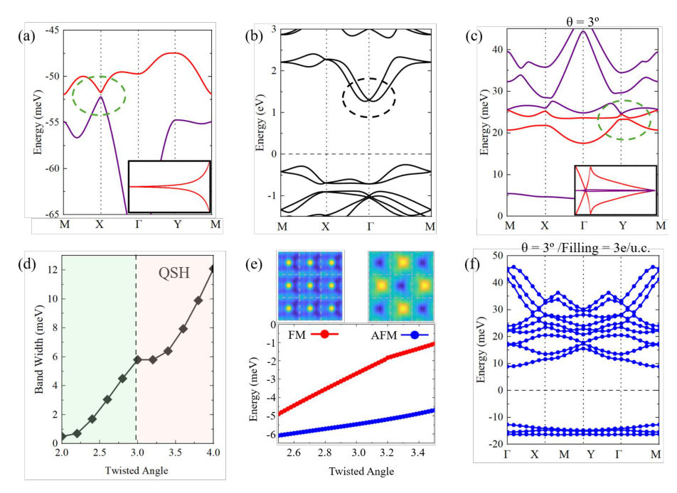
<figcaption class="paper-figure-caption"><b>Fig 5.</b> Figure 5. Isolated topological bands and correlated effects. (a) Moiré miniband dispersion with artificially larger SOC strength along high-symmetry lines of twisted bilayer HgI2, where band hybridization and avoided crossings emerge (highlighted by red circles). Inset is the WCC evolution. (b) Electronic band structure of monolayer PbI2. (c) Moiré miniband structure of twisted D-2 bilayer PbI2. Inset is the WCC evolution. (d) Evolution of band width and topological phase transition in twisted D-2 bilayer PbI2. (e) Correlated effects in twisted D-2 bilayer PbI2 and spin charge density of FM and AFM twisted D-2 bilayer PbI2. (f) Hartree-Fock band structure of twisted bilayer PbI2 with...</figcaption>
</figure>
</div>

<p><strong>Summary.</strong> This work proposes a novel platform for realizing topological moiré minibands using noncollinear spin-orbit coupling in centrosymmetric bilayers, moving beyond traditional valley-based models. By modeling twisted $ ext{HgI}_2$ and optimizing the system using machine learning, the authors predict the formation of robust topological phases in $   ext{PbI}_2$. This provides a general, material-designable route for engineering correlated topological insulators.</p>
<p><strong>Why it may be interesting.</strong> The focus on engineered topological phases driven by strong spin-orbit coupling and correlated electron behavior makes it highly relevant to condensed matter theory, particularly for understanding emergent quantum states in artificial lattices.</p>
<details>
<summary>Detailed structure</summary>
<p><strong>Main problem.</strong> To establish a general theoretical route to realizing topological moiré minibands that bypasses the reliance on valley degrees of freedom or hexagonal lattice symmetries.</p>
<p><strong>Main result.</strong> The study demonstrates that noncollinear spin-orbit coupling in centrosymmetric bilayers can generate topological moiré minibands, which can be optimized using machine learning to support tunable quantum spin Hall and Chern insulating phases.</p>
<p><strong>Method.</strong> The research combines theoretical modeling of moiré Hamiltonians with advanced computational techniques, including the use of a physics-informed machine-learning surrogate for topological classification.</p>
<p><strong>Model / system.</strong> The system involves Moiré superlattices formed by twisting type-II SOC bilayers, initially modeled with $   ext{HgI}_2$ and optimized for $ ext{PbI}_2$. The physics is governed by the interplay between interlayer hybridization, noncollinear SOC, and the resulting moiré potential.</p>
<p><strong>Key observables.</strong> Topological $\mathbb{Z}_2$ invariant, localized Berry curvature hotspots, topological flat bands, and the magnitude of the superconducting/insulating gap.</p>
<p><strong>Important parameters / regimes.</strong> Strength of SOC ($\lambda_{	ext{SOC}}$), lattice mismatch/twist angle, and the gap threshold (1 meV).</p>
<p><strong>Assumptions / limitations.</strong> The mechanism relies on interlayer hybridization opening pseudogaps, and the ML model assumes that SOC strength is the primary determinant of topology.</p>
<p><strong>Figures summary.</strong> Figure 1 schematically summarizes the mechanism from type-II noncollinear-SOC bilayers to topological moiré minibands. Figure 2 illustrates the pseudo-gap opening and localized Berry curvature in the D-2 homobilayer.</p>
<p><strong>Paper structure.</strong> The paper first introduces the limitations of valley-based moiré systems, proposes the noncollinear SOC route using $  ext{HgI}_2$, develops the moiré Hamiltonian, characterizes the topology using Wilson loops, and finally employs a physics-informed ML surrogate to guide material optimization towards $    ext{PbI}_2$.</p>
</details>
<details>
<summary>Abstract</summary>
<p>Moiré superlattices provide a powerful platform for flat bands and correlated topological phases, yet most established examples rely on valley-contrasting Berry curvature in hexagonal lattices. Here, we propose a different route to achieve topological moiré minibands based on noncollinear spin orbit coupling in centrosymmetric type II SOC bilayers. Interlayer hybridization opens local pseudogaps and produces sharply localized Berry curvature, which twisting reconstructs into isolated topological minibands without requiring valley degrees of freedom or hexagonal symmetry. We demonstrate this mechanism in tetragonal Dresselhaus-SOC HgI2, where a Lieb-like moiré potential yields topological flat bands. To improve miniband isolation, we develop a physics-informed machine-learning surrogate that identifies stronger SOC as a key design principle and guides the replacement of Hg by Pb. The resulting PbI2 minibands are narrower and better isolated, supporting correlation-driven magnetism and tunable quantum spin Hall and Chern insulating phases, thereby providing an optimized material realization for experimental exploration.</p>
</details>
<p><sub><a href="#top">↑ back to top</a></sub></p>

<p><a id="paper-2609.10777"></a></p>
<h3 id="thermal-stability-of-encapsulated-molecular-structures-with-extended-oh-hydrogen-bond-chains"><a href="http://arxiv.org/abs/2609.10777v1">Thermal Stability of Encapsulated Molecular Structures with Extended OH-Hydrogen-Bond Chains</a></h3>
<p><strong>Authors:</strong> Alexander V. Savin<br>
<strong>Type:</strong> theory · <strong>Category:</strong> statistical mechanics · <strong>PDF:</strong> <a href="https://arxiv.org/pdf/2609.10777v1">https://arxiv.org/pdf/2609.10777v1</a><br>
<strong>Analysis basis:</strong> full PDF text, analyzed in chunks
<strong>Topic relevance:</strong> <code>Frenkel-Kontorova</code> <strong>2/5</strong> · <code>driven-dissipative phase transition</code> <strong>1/5</strong> · <code>non-equilibrium universality</code> <strong>1/5</strong> · <code>scars &amp; prethermalization</code> <strong>1/5</strong></p>
<div class="figure-strip-hint">↔ Scroll figures horizontally</div>
<div class="paper-figures-scroll">
<figure class="paper-figure-card">
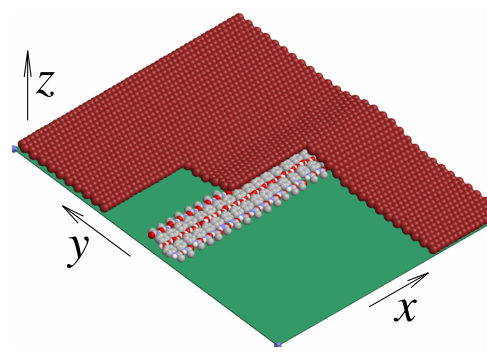
<figcaption class="paper-figure-caption"><b>Fig 1.</b> FIG. 1: Linear structure of 46 paracetamol molecules ad- sorbed on a flat substrate z ≤0 and covered by an h-BN sheet. The simulation periodic cell of size 13.02 × 13.01 nm2</figcaption>
</figure>
<figure class="paper-figure-card">
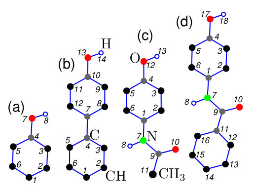
<figcaption class="paper-figure-caption"><b>Fig 2.</b> FIG. 2: Coarse-grained models for (a) phenol C6H5OH, (b) 4-phenylphenol C6H5 –C6H4OH, (c) paracetamol CH3C(O)NHC6H4OH, and (d) 4-hydroxybenzanilide C6H5C(O)NHC6H4OH molecules. Hydrogen atoms are shown as white spheres, carbon as gray, nitrogen as green, oxygen as red, and united atoms CH and CH3 as black (the numbering of atoms used is shown). Valence bonds are shown as blue lines.</figcaption>
</figure>
<figure class="paper-figure-card">
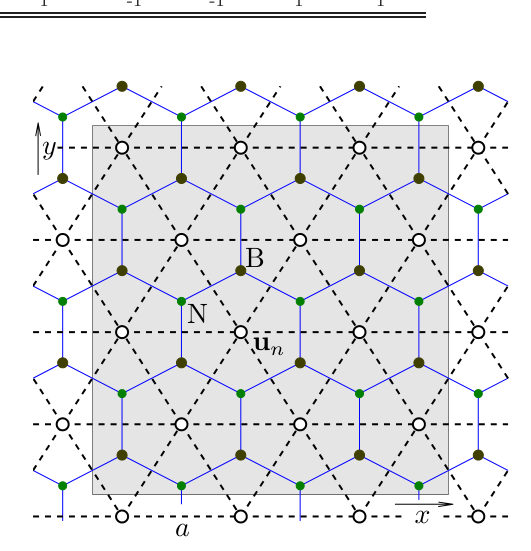
<figcaption class="paper-figure-caption"><b>Fig 3.</b> FIG. 3: Construction of the coarse-grained model for an h-BN sheet. The hexagonal lattice of the sheet is shown (nitrogen atoms correspond to green, boron to brown spheres; blue lines show B–N valence bonds). Large white spheres show the po- sitions of the united atoms, and dashed lines show the bonds between them. The gray square shows the periodic cell of the triangular lattice of size 3a × 4ay, with lattice spacing a = √</figcaption>
</figure>
<figure class="paper-figure-card">
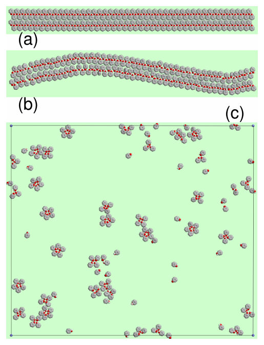
<figcaption class="paper-figure-caption"><b>Fig 4.</b> FIG. 4: Structure of phenol molecules forming two adjacent hydrogen-bond chains on the flat surface of an h-BN crystal at temperatures (a) T = 10, (b) 240, and (c) 260 K. Carbon atoms are shown in gray, oxygen in red, hydrogen in white; the flat substrate is shown in green. In part (c), the simulation periodic cell of size 25.045 × 21.6896 nm2 is shown (number of molecules N1 = 176).</figcaption>
</figure>
<figure class="paper-figure-card">
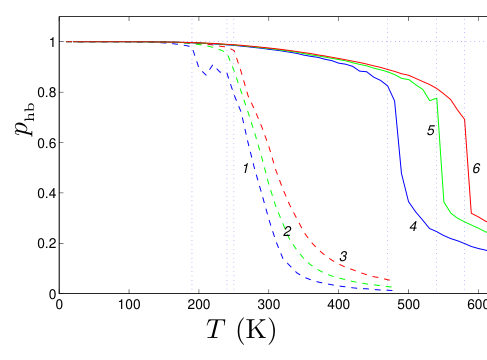
<figcaption class="paper-figure-caption"><b>Fig 5.</b> FIG. 5: Temperature dependence of the specific number of hydrogen bonds phb for one, two, and four adjacent chains of phenol molecules (number of molecules N1 = 88, 176, 352) lying open on the flat substrate (curves 1, 2, and 3) and cov- ered by an h-BN sheet (curves 4, 5, and 6). Vertical dashed lines show the temperature values 190, 240, 250 and 470, 540, 580 K.</figcaption>
</figure>
</div>

<p><strong>Summary.</strong> This work uses molecular dynamics simulations to study the thermal stability of molecular chains stabilized by hydrogen bonds, particularly those formed by molecules like paracetamol. By encapsulating these chains between layers of hexagonal boron nitride (h-BN), the researchers demonstrate a massive enhancement in thermal stability. This suggests a viable pathway for designing next-generation, high-temperature anhydrous proton-exchange membranes.</p>
<p><strong>Why it may be interesting.</strong> While the focus is on classical thermal stability, the use of molecular dynamics simulations to model phase transitions (chain dissociation) and high-temperature material properties touches upon non-equilibrium statistical mechanics and energy landscape exploration.</p>
<details>
<summary>Detailed structure</summary>
<p><strong>Main problem.</strong> The primary goal is to develop materials with high proton conductivity at elevated temperatures and in the absence of water, suitable for Proton-Exchange Membranes (PEMs).</p>
<p><strong>Main result.</strong> Encapsulation of molecular hydrogen-bond chains within h-BN significantly enhances thermal stability, allowing the creation of anhydrous PEMs operating up to 1140 K.</p>
<p><strong>Method.</strong> The study employs coarse-grained molecular dynamics simulations to model the thermal stability and dynamics of molecular chains.</p>
<p><strong>Model / system.</strong> The system involves linear molecular chains (e.g., paracetamol) forming OH...OH...OH hydrogen-bond chains, adsorbed on a substrate and encapsulated by a hexagonal boron nitride (h-BN) sheet. The dynamics are governed by a total Hamiltonian incorporating bond, angle, dihedral, and Lennard-Jones potentials.</p>
<p><strong>Key observables.</strong> Dissociation temperatures ($T_1$ and $T_2$), and the specific number of hydrogen bonds ($
ho_{hb}$) as a function of temperature ($T$).</p>
<p><strong>Important parameters / regimes.</strong> The simulation uses various force field parameters (e.g., LJ parameters, stiffness coefficients $K_0$) and compares stability regimes (open vs. encapsulated).</p>
<p><strong>Assumptions / limitations.</strong> The analysis relies on coarse-grained molecular dynamics simulations and assumes the applicability of the modeled potentials to describe the physical interactions.</p>
<p><strong>Figures summary.</strong> Figures illustrate the linear structure of the molecular chains adsorbed and covered by h-BN. Temperature dependence plots (Fig. 14) show the retention of hydrogen bonds under different conditions, with encapsulation providing the highest stability.</p>
<p><strong>Paper structure.</strong> The paper establishes the scientific problem (high-temp PEMs), details the physical model (molecular chains + h-BN encapsulation), presents the simulation methodology (coarse-grained MD), and concludes by quantifying the enhanced thermal stability of the encapsulated structures.</p>
</details>
<details>
<summary>Abstract</summary>
<p>Using a coarse-grained model, we performed numerical simulations of the dynamics of linear molecular chains adsorbed on a flat substrate (on the surface of an h-BN crystal). It is shown that molecules containing benzene rings and hydroxyl groups in their structure can form stable hydrogen-bond chains OH$\cdots$OH$\cdots$OH. Such chains can be formed by phenol C$_6$H$_5$OH, 4-phenylphenol C$_6$H$_5$--C$_6$H$_4$OH, paracetamol CH$_3$C(O)NHC$_6$H$_4$OH, and 4-hydroxybenzanilide C$_6$H$_5$C(O)NHC$_6$H$_4$OH molecules. The dissociation of these chains occurs at temperatures above $T_1=190$, 240, 300, and 400K, respectively. Coating such molecular systems with a hexagonal boron nitride sheet (their van der Waals encapsulation) significantly enhances their thermal stability. Such encapsulated molecular structures retain hydrogen-bond chains up to temperatures of $T_2=470$, 800, 880, and 1140K, respectively. The simulations allow us to conclude that h-BN-encapsulated chains of these molecules can be used to create anhydrous proton-exchange membranes capable of operating at high temperatures. The most promising are encapsulated chains of paracetamol and 4-hydroxybenzanilide molecules.</p>
</details>
<p><sub><a href="#top">↑ back to top</a></sub></p>

<p><a id="paper-2609.11048"></a></p>
<h3 id="a-phase-field-study-of-desiccation-crack-pattern-maturation-under-drying-wetting-cycles"><a href="http://arxiv.org/abs/2609.11048v1">A Phase-Field Study of Desiccation Crack Pattern Maturation under Drying-Wetting Cycles</a></h3>
<p><strong>Authors:</strong> Hiroki Fukushima, Satoshi Yukawa<br>
<strong>Type:</strong> theory · <strong>Category:</strong> numerical methods · <strong>PDF:</strong> <a href="https://arxiv.org/pdf/2609.11048v1">https://arxiv.org/pdf/2609.11048v1</a><br>
<strong>Analysis basis:</strong> full PDF text, analyzed in chunks
<strong>Topic relevance:</strong> <code>methods for driven-dissipative</code> <strong>2/5</strong></p>
<div class="figure-strip-hint">↔ Scroll figures horizontally</div>
<div class="paper-figures-scroll">
<figure class="paper-figure-card">
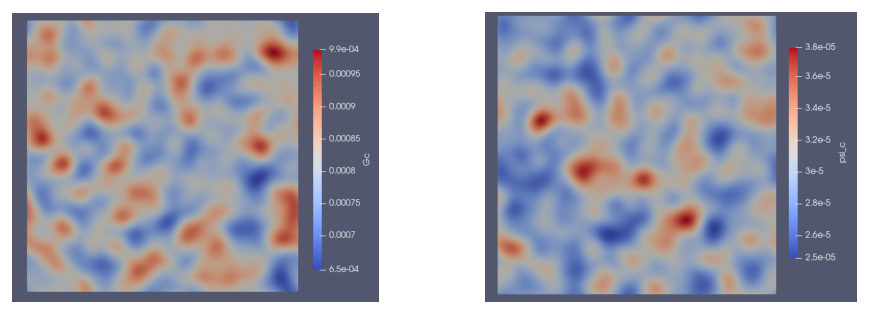
<figcaption class="paper-figure-caption"><b>Fig 1.</b> FIG. 1: (color online) Spatial distributions of the fracture toughness Gc and the critical</figcaption>
</figure>
<figure class="paper-figure-card">
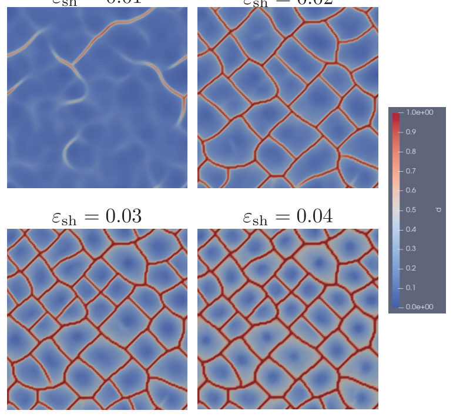
<figcaption class="paper-figure-caption"><b>Fig 2.</b> FIG. 2: (color online) Snapshots of crack-pattern growth during the drying process of the</figcaption>
</figure>
<figure class="paper-figure-card">
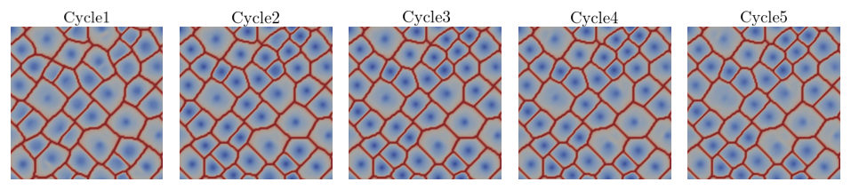
<figcaption class="paper-figure-caption"><b>Fig 3.</b> FIG. 3: (color online) Snapshots of the damage field of the crack pattern at the end of each</figcaption>
</figure>
<figure class="paper-figure-card">
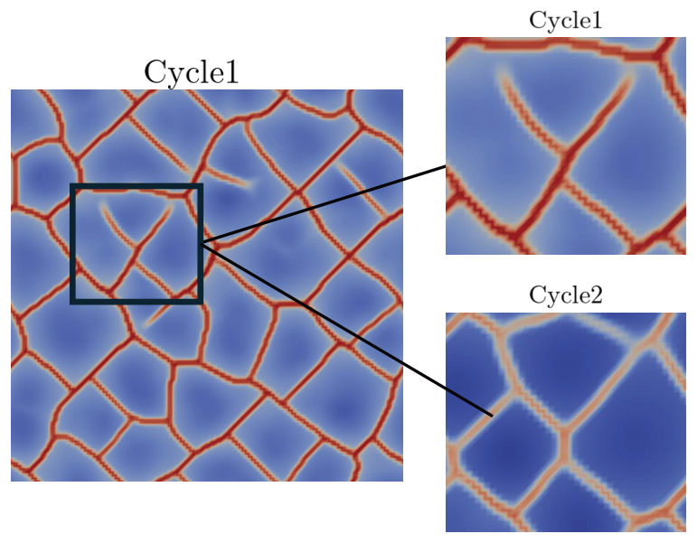
<figcaption class="paper-figure-caption"><b>Fig 4.</b> FIG. 4: (color online) Magnified view of the same region at the end of the first and second</figcaption>
</figure>
<figure class="paper-figure-card">
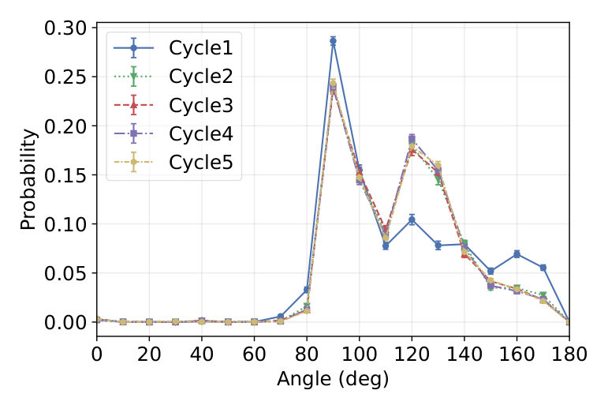
<figcaption class="paper-figure-caption"><b>Fig 5.</b> FIG. 5: Sample average of the angle distributions for cycles 1 through 5. We normalized</figcaption>
</figure>
</div>

<p><strong>Summary.</strong> This paper develops and applies a phase-field model to simulate how desiccation cracks mature during repeated drying-wetting cycles. By incorporating crack healing and a 'scar effect' from past damage, the model accurately predicts the relaxation of the crack intersection angle towards 120 degrees. The work demonstrates the power of advanced numerical techniques in modeling complex, history-dependent material failure.</p>
<p><strong>Why it may be interesting.</strong> While the physics is classical mechanics, the rigorous application of phase-field modeling, coupled with complex iterative numerical solvers (FEM, Newton's method), provides a detailed case study in advanced computational physics techniques applicable to many non-equilibrium systems.</p>
<details>
<summary>Detailed structure</summary>
<p><strong>Main problem.</strong> The study investigates the relaxation of the characteristic intersection angle of desiccation cracks from near 90 degrees toward 120 degrees under repeated drying-wetting cycles.</p>
<p><strong>Main result.</strong> The model successfully predicts that the angle distribution develops a peak near 120 degrees, and both the angle standard deviation and crack energy decay exponentially with the cycle number.</p>
<p><strong>Method.</strong> A phase-field model is employed, solved using a finite element method (FEM) with an alternating iteration scheme to track crack evolution and material damage.</p>
<p><strong>Model / system.</strong> The system is a two-dimensional isotropic elastic body (paste) undergoing desiccation. The model incorporates a phase-field damage variable, crack healing, and a 'scar effect' (memory field) that modifies local fracture toughness in subsequent cycles.</p>
<p><strong>Key observables.</strong> Crack intersection angle distribution, standard deviation of the intersection angle, and crack energy.</p>
<p><strong>Important parameters / regimes.</strong> Shrinkage strain ($\epsilon_{sh}$), degradation function $g(d)$, and parameters controlling the scar effect ($a_G, a_P$).</p>
<p><strong>Assumptions / limitations.</strong> The paste is treated as a thin, two-dimensional elastic body, and the simulation relies on iterative numerical solvers (Newton's method) to solve coupled displacement and damage equations.</p>
<p><strong>Figures summary.</strong> Not specified, but the analysis involves tracking spatial distributions of damage and calculating intersection angles from the damage field.</p>
<p><strong>Paper structure.</strong> The paper details the formulation of the total energy functional, describes the desiccation process incorporating history/scar effects, and outlines the numerical solution procedure using alternating iterations for the displacement and damage fields.</p>
</details>
<details>
<summary>Abstract</summary>
<p>The characteristic intersection angle of the desiccation crack relaxes from near \ang{90} toward \ang{120} under repeated drying--wetting cycles. However, the theoretical understanding of this relaxation is insufficient, especially the modeling of the drying--wetting cycles. Here we introduce a phase-field model of desiccation fracture, extending the model proposed in previous studies by adding crack healing and a scar effect left by past cracks. By repeating drying--wetting cycles in a finite element simulation, we find that the angle distribution develops a growing peak near \ang{120} as the cycle number increases, consistent with experiments. The standard deviation of the intersection angle from \ang{120} relaxes exponentially with a characteristic time of about 2.85 cycles. These results are consistent with experiments, except that the characteristic time is slightly smaller than the experimental value. Crack energy dominates the total energy and also relaxes exponentially with nearly the same characteristic cycle as the angle relaxation. This decay is driven mainly by a shortening of the effective crack length rather than a change in effective fracture toughness.</p>
</details>
<p><sub><a href="#top">↑ back to top</a></sub></p>

<p><a id="paper-2609.11397"></a></p>
<h3 id="influence-of-magnetic-fields-on-the-performance-of-spin-orbit-torque-magnetic-random-access-memory"><a href="http://arxiv.org/abs/2609.11397v1">Influence of magnetic fields on the performance of spin-orbit torque magnetic random-access memory</a></h3>
<p><strong>Authors:</strong> Jiaxin Liu, Yuqing Zhou, Guoyi Shi, Kaiming Cai<br>
<strong>Type:</strong> theory · <strong>Category:</strong> other · <strong>PDF:</strong> <a href="https://arxiv.org/pdf/2609.11397v1">https://arxiv.org/pdf/2609.11397v1</a><br>
<strong>Analysis basis:</strong> full PDF text, analyzed in chunks
<strong>Topic relevance:</strong> <code>analog quantum simulation</code> <strong>1/5</strong> · <code>quantum measurements</code> <strong>1/5</strong></p>
<div class="figure-strip-hint">↔ Scroll figures horizontally</div>
<div class="paper-figures-scroll">
<figure class="paper-figure-card">
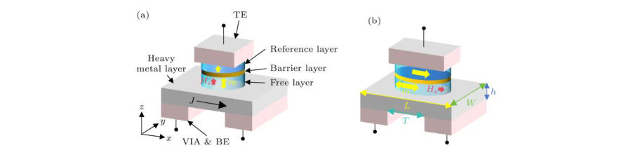
<figcaption class="paper-figure-caption"><b>Fig 1.</b> Fig. 1. Schematic of an SOT-MRAM cell: (a) PMA structure, where TE and BE denote the top and bottom electrodes, respectively; (b) IMA structure.</figcaption>
</figure>
<figure class="paper-figure-card">
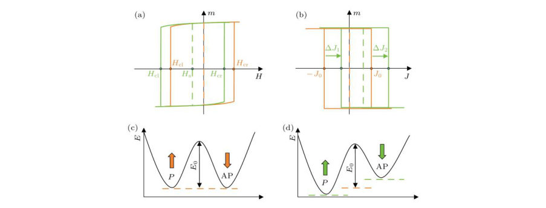
<figcaption class="paper-figure-caption"><b>Fig 2.</b> Fig. 2. Schematic illustration of how a bias magnetic field affects SOT-MRAM performance: (a) shift of the magnetic hysteresis loop and asymmetry of the coercive fields; (b) asymmetric critical switching current densities; (c) energy barriers without a bias field; (d) unequal energy barriers of the P and AP states in the presence of a bias field.</figcaption>
</figure>
<figure class="paper-figure-card">
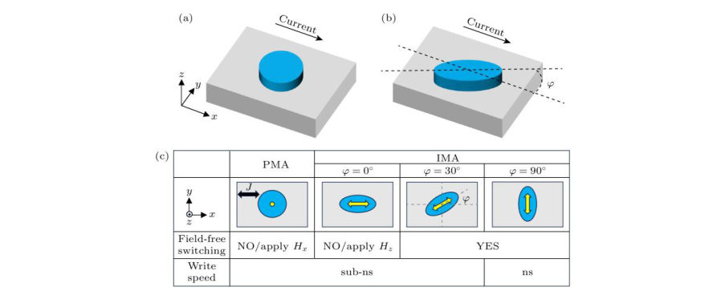
<figcaption class="paper-figure-caption"><b>Fig 3.</b> Fig. 3. Micromagnetic simulation geometries: (a) PMA structure; (b) IMA structure; (c) switching dynamics of the PMA and IMA structures. The gray and blue regions represent the heavy-metal layer and the free layer, respectively.</figcaption>
</figure>
<figure class="paper-figure-card">

<figcaption class="paper-figure-caption"><b>Fig 4.</b> Figure 4 presents the simulation results for the PMA structure. To achieve deterministic switching of the free layer driven by current in the PMA structure, an auxiliary field Hx along the x-direction is typically required. As shown in Figure 4(a), when the external magnetic field is small, the critical switching current density Jc decreases linearly with increasing Hx, and the direction of Hx determines the switching polarity. Furthermore, when a magnetic field Hy along the y-direction is introduced under a fixed auxiliary field of μ0Hx = 60 mT, the modulation of Jc by Hy exhibits nonlinear characteristics, as illustrated in Figure 4(b). In contrast, under the same fixed auxiliary field...</figcaption>
</figure>
<figure class="paper-figure-card">
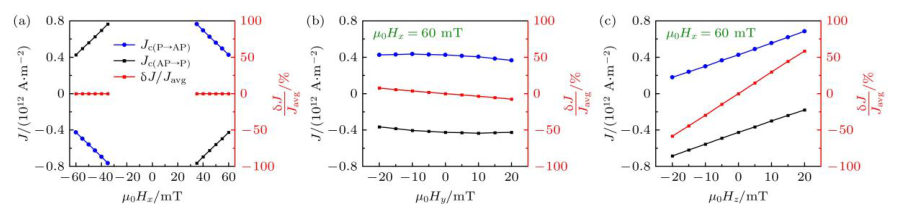
<figcaption class="paper-figure-caption"><b>Fig 5.</b> Fig. 4. Modulation of the critical switching current density and bias ratio in the PMA structure under external uniform magnetic fields: (a) Dependence of the critical switching current density and bias ratio on Hx; (b) dependence of the critical switching current density and bias ratio on Hy with μ0Hx = 60 mT; (c) dependence of the critical switching current density and bias ratio on Hz with μ0Hx = 60 mT.</figcaption>
</figure>
</div>

<p><strong>Summary.</strong> This paper addresses performance limitations in SOT-MRAM caused by intrinsic stray magnetic bias fields. The authors propose a novel, non-invasive method using magnetic filling in interconnect vias to compensate for this bias field. This technique significantly reduces switching current asymmetry, making the memory more energy-efficient and scalable for future integration.</p>
<p><strong>Why it may be interesting.</strong> While focused on spintronics, the concept of engineering local fields to control switching dynamics is relevant to understanding engineered quantum potentials or controlling interactions in artificial quantum systems.</p>
<details>
<summary>Detailed structure</summary>
<p><strong>Main problem.</strong> SOT-MRAM suffers from an intrinsic bias field due to stray fields, causing asymmetric critical switching currents and increased energy consumption.</p>
<p><strong>Main result.</strong> The authors propose engineering local stray magnetic fields via magnetic filling in VIA channels, reducing the write-current bias ratio from 21.6% to 1.3% and maintaining performance at nanoscale dimensions.</p>
<p><strong>Method.</strong> The study uses micromagnetic simulations to model the effect of engineered local stray fields on the magnetization switching dynamics of SOT-MRAM.</p>
<p><strong>Model / system.</strong> The physical system is Spin-Orbit Torque Magnetic Random-Access Memory (SOT-MRAM) devices, analyzed using the Landau-Lifshitz-Gilbert equation incorporating SOT terms for both PMA and IMA structures.</p>
<p><strong>Key observables.</strong> Write-current asymmetry, write-current bias ratio, power consumption, and data-retention stability.</p>
<p><strong>Important parameters / regimes.</strong> Bias magnetic field (H_s), critical current densities (J_AP-&gt;P, J_P-&gt;AP), and device size (down to 10 nm diameter).</p>
<p><strong>Assumptions / limitations.</strong> The core assumption is that modifying VIA channels with ferromagnetic material can effectively modulate the stray field without altering the sensitive MTJ thin films.</p>
<p><strong>Figures summary.</strong> Figures illustrate the asymmetry in switching fields and currents due to bias fields, and show the modulation of the bias ratio and current density using the proposed magnetic filling structure.</p>
<p><strong>Paper structure.</strong> The paper first establishes the problem of bias-induced asymmetry in SOT-MRAM, then proposes the non-invasive BEOL-compatible field engineering technique, and finally quantifies the resulting improvements in switching symmetry and power consumption.</p>
</details>
<details>
<summary>Abstract</summary>
<p>Spin-orbit torque magnetic random-access memory (SOT-MRAM) offers high speed, ultrahigh endurance, and compatibility with advanced semiconductor processes, making it a promising candidate for next-generation nonvolatile memory. However, intrinsic bias fields in magnetic tunnel junctions (MTJs), originating from reference-layer stray fields and interlayer coupling, cause asymmetric critical switching currents and increased energy consumption. Existing compensation approaches usually introduce additional magnetic layers into the MTJ stack, which increases fabrication complexity and limits wafer-scale integration. Here, we propose a bias-compensation strategy without modifying the MTJ stack by engineering local stray magnetic fields through magnetic filling materials in vertical interconnect access (VIA) channels during the back-end-of-line process. Micromagnetic simulations show that the proposed magnetic filling layer can provide the required auxiliary field for deterministic switching and significantly suppress write-current asymmetry. By optimizing the MTJ position relative to the magnetic filling structure, the write-current bias ratio is reduced from 21.6% in the conventional design to 1.3%. The approach is also applicable to in-plane magnetic anisotropy SOT-MTJs, reducing the bias ratio from 19.8% to -0.2%. Scaling analysis further demonstrates that the compensation effect remains effective when the device size is reduced to 20% of the original dimension (MTJ diameter approximately 10 nm), indicating its potential for high-density SOT-MRAM integration.</p>
</details>
<p><sub><a href="#top">↑ back to top</a></sub></p>

<p><a id="paper-2609.11711"></a></p>
<h3 id="interplay-of-kekule-order-flat-bands-and-electron-phonon-coupling-in-graphene"><a href="http://arxiv.org/abs/2609.11711v1">Interplay of Kekulé order, flat bands and electron-phonon coupling in graphene</a></h3>
<p><strong>Authors:</strong> Dominik Szczȩśniak<br>
<strong>Type:</strong> theory · <strong>Category:</strong> strongly correlated electrons · <strong>PDF:</strong> <a href="https://arxiv.org/pdf/2609.11711v1">https://arxiv.org/pdf/2609.11711v1</a><br>
<strong>Analysis basis:</strong> full PDF text, analyzed in chunks
<strong>Topic relevance:</strong> <code>Keldysh / 2PI / non-Gaussian methods</code> <strong>1/5</strong> · <code>analog quantum simulation</code> <strong>1/5</strong></p>
<div class="figure-strip-hint">↔ Scroll figures horizontally</div>
<div class="paper-figures-scroll">
<figure class="paper-figure-card">
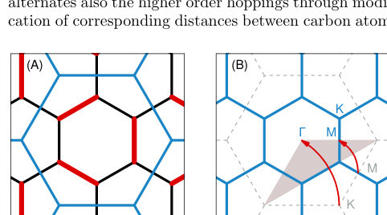
<figcaption class="paper-figure-caption"><b>Fig 1.</b> FIG. 1. The √</figcaption>
</figure>
<figure class="paper-figure-card">
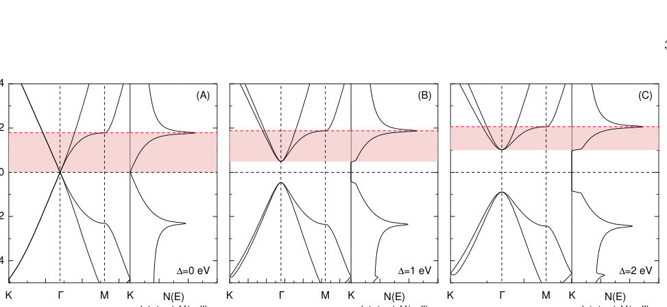
<figcaption class="paper-figure-caption"><b>Fig 2.</b> FIG. 2. The electronic structure and the corresponding density of states of graphene for selected values of the band gap proxy representing the magnitude of the Kekul´e distortion. The results are presented in the folded Brillouin-zone representation of the √</figcaption>
</figure>
<figure class="paper-figure-card">
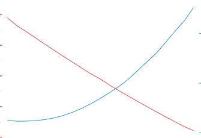
<figcaption class="paper-figure-caption"><b>Fig 3.</b> FIG. 3. The global width of π∗band below EVHS (red) and the maximum of the VHS at positive energies (blue) for graphene as a function of the band gap proxy representing the magnitude of the Kekul´e distortion.</figcaption>
</figure>
<figure class="paper-figure-card">
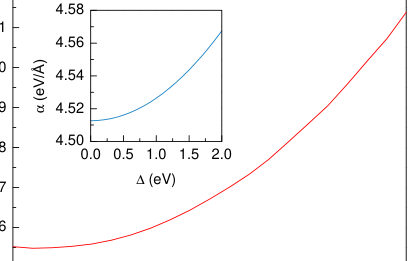
<figcaption class="paper-figure-caption"><b>Fig 4.</b> FIG. 4. The effective dimensionless electron-phonon coupling for the dominant in-plane phonon mode (A1) of graphene as as a function of the band gap proxy representing the magnitude of the Kekul´e distortion. The same functional dependence for the corresponding bond-resolved electron-phonon coupling is presented in the inset.</figcaption>
</figure>
</div>

<p><strong>Summary.</strong> This work theoretically investigates how Kekulé lattice distortions in graphene simultaneously induce flat electronic bands and enhance electron-phonon coupling. The findings show that the density of states at the Van Hove singularity drives this coupling enhancement, suggesting that the system may enter a nonadiabatic regime where standard approximations fail.</p>
<p><strong>Why it may be interesting.</strong> The strong coupling between lattice structure (Kekulé order) and electronic correlations (flat bands, enhanced coupling) provides a concrete platform for studying emergent correlated quantum phases, which is central to many-body physics.</p>
<details>
<summary>Detailed structure</summary>
<p><strong>Main problem.</strong> To provide a unified, microscopic description linking Kekulé ordering, flat band formation, and the resulting enhancement of electron-phonon coupling in graphene.</p>
<p><strong>Main result.</strong> The enhancement of electron-phonon coupling is predominantly governed by the increasing density of states at the Van Hove singularity, suggesting potential nonadiabatic effects beyond the conventional Migdal approximation.</p>
<p><strong>Method.</strong> Theoretical calculation involving the analysis of the electronic band structure and the application of an effective Hopfield-McMillan formula for electron-phonon coupling.</p>
<p><strong>Model / system.</strong> The system is graphene subjected to Kekulé order, modeled by a spinless Hamiltonian incorporating hopping up to third-nearest neighbors, leading to a $\sqrt{3} 	imes \sqrt{3}$ superlattice distortion.</p>
<p><strong>Key observables.</strong> Density of States $N(E)$ at the VHS, global width of the $\pi^*$ band ($W$), and the dimensionless electron-phonon coupling ($\lambda$).</p>
<p><strong>Important parameters / regimes.</strong> Kekulé distortion magnitude ($\Delta$), filling fraction ($1/4$), and the ratio governing adiabaticity ($\lambda\Omega_0/W$).</p>
<p><strong>Assumptions / limitations.</strong> The analysis uses an effective Hopfield-McMillan formula and assumes the deformation potential can be approximated by $\alpha$, while also noting the potential breakdown of the adiabatic approximation.</p>
<p><strong>Figures summary.</strong> Figures illustrate the $\sqrt{3} 	imes \sqrt{3}$ supercell and band folding, showing band renormalization and the evolution of $N(E)$ and $\lambda$ as the distortion parameter $\Delta$ increases.</p>
<p><strong>Paper structure.</strong> The paper establishes the physical problem, models the system using a modified Hamiltonian, calculates key observables like $N(E)$ and $\lambda$ as functions of the distortion, and concludes by discussing the implications for nonadiabatic physics.</p>
</details>
<details>
<summary>Abstract</summary>
<p>The Kekulé order in graphene is known to give rise to extended flat bands near the van Hove singularity (VHS) and enhanced electron-phonon coupling. However, the microscopic mechanism underlying the coexistence of these effects remains unclear. Here, it is shown that they jointly emerge as a consequence of the lattice distortion manifested through the differentiation of carbon bonds and associated electronic hoppings. In this picture, the conduction band around the $M$ point decreases almost linearly in width with increasing Kekulé order, while the VHS and dimensionless electron-phonon coupling exhibit approximately quadratic upward responses. The resulting enhancement of the electron-phonon coupling is governed predominantly by the increasing density of states at the VHS, with the effective deformation potential remaining weakly affected by the distortion. As such, the obtained results are consistent with previous related theoretical and experimental studies, while also pointing toward a potential shallowing of the conduction band under the characteristic $1/4$ filling and an increasing relevance of nonadiabatic electron-phonon effects beyond the conventional Migdal approximation. Altogether, these findings highlight the potential of controlled Kekulé ordering for engineering emergent correlated quantum phases in graphene.</p>
</details>
<p><sub><a href="#top">↑ back to top</a></sub></p>

<p><a id="paper-2609.10820"></a></p>
<h3 id="long-interfacial-internal-waves-with-currents-current-profiles-with-quadratic-depth-dependence"><a href="http://arxiv.org/abs/2609.10820v1">Long interfacial internal waves with currents: current profiles with quadratic depth-dependence</a></h3>
<p><strong>Authors:</strong> Conor T. Curtin, Rossen I. Ivanov<br>
<strong>Type:</strong> theory · <strong>Category:</strong> other · <strong>PDF:</strong> <a href="https://arxiv.org/pdf/2609.10820v1">https://arxiv.org/pdf/2609.10820v1</a><br>
<strong>Analysis basis:</strong> full PDF text, analyzed in chunks
<strong>Topic relevance:</strong> <code>analog quantum simulation</code> <strong>1/5</strong></p>
<div class="figure-strip-hint">↔ Scroll figures horizontally</div>
<div class="paper-figures-scroll">
<figure class="paper-figure-card">
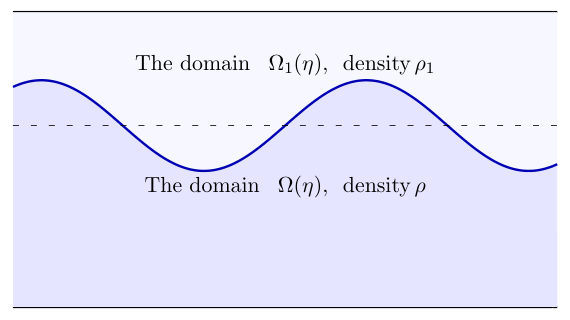
<figcaption class="paper-figure-caption"><b>Fig 1.</b> Figure 1: Schematic of a two dimensional internal wave model. The two domains are separated by the interface z = η(x, t). The densities are ρ &gt; ρ1.</figcaption>
</figure>
<figure class="paper-figure-card">
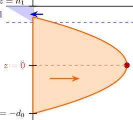
<figcaption class="paper-figure-caption"><b>Fig 2.</b> Figure 2: The quadratic flow profile of the EUC in the region of interest. The flow reverses close to the surface in reality due to wind shear in the westerly direction.</figcaption>
</figure>
<figure class="paper-figure-card">
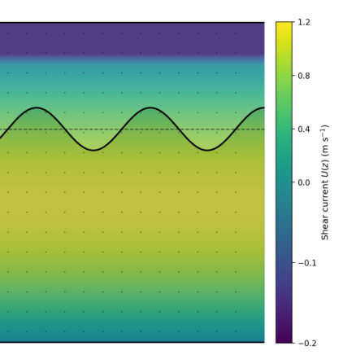
<figcaption class="paper-figure-caption"><b>Fig 3.</b> Figure 3: Internal waves in the presence of shear current.</figcaption>
</figure>
<figure class="paper-figure-card">
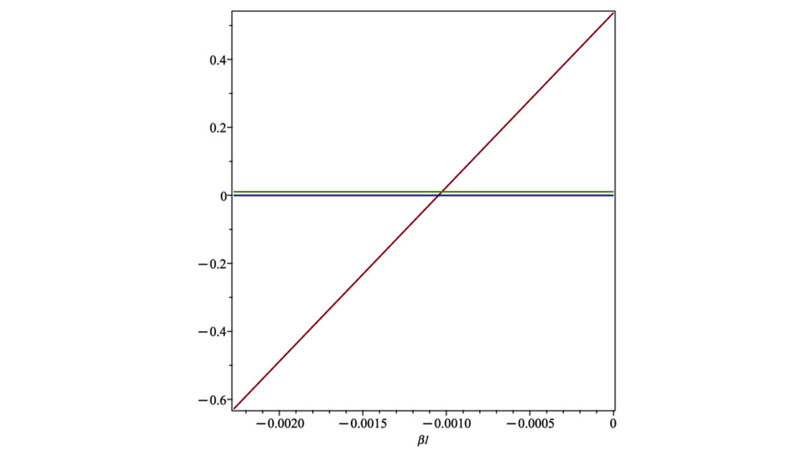
<figcaption class="paper-figure-caption"><b>Fig 4.</b> Figure 4: The coefficient A vs β1; the coefficient A when β = β1 = 0 is given by the green horizontal line for comparison; ρ1 = 1000.0, ρ = 1027.0, h1 = 1500.0, h = 800.0.</figcaption>
</figure>
</div>

<p><strong>Summary.</strong> This paper develops a theoretical model for internal waves propagating in stratified ocean layers affected by a background shear current, specifically assuming a quadratic current profile. Using advanced fluid dynamics techniques, the authors derive nonlinear evolution equations, such as the Gardner's equation, governing the wave dynamics. The key finding is that the resulting wave behavior is highly sensitive to the parameters of the background current.</p>
<p><strong>Why it may be interesting.</strong> While focused on geophysical fluid dynamics, the derivation of integrable nonlinear equations (like Gardner's) from physical constraints and the analysis of their soliton solutions share mathematical techniques with those used in nonlinear wave physics relevant to quantum systems.</p>
<details>
<summary>Detailed structure</summary>
<p><strong>Main problem.</strong> The study models the propagation of long interfacial internal waves in a two-layer fluid system that is subjected to a background shear current.</p>
<p><strong>Main result.</strong> The analysis derives nonlinear evolution equations, specifically leading to the Gardner's equation, whose solutions (solitons) are shown to be highly sensitive to the parameters defining the background current profile.</p>
<p><strong>Method.</strong> The authors employ fluid dynamics principles, utilizing stream functions, complex potentials, and Dirichlet-Neumann Operators (DNO) to derive the governing equations in the long wave asymptotic limit.</p>
<p><strong>Model / system.</strong> The system is a two-layer fluid (upper and lower) separated by an interface (thermocline), where the background current profile is assumed to be a quadratic function of depth, mimicking the Equatorial Undercurrent (EUC).</p>
<p><strong>Key observables.</strong> Thermocline elevation $\eta(x, t)$, and the associated nonlinear wave solutions (solitons).</p>
<p><strong>Important parameters / regimes.</strong> The quadratic coefficients ($\kappa, \gamma, eta$) defining the background current profile, and scaling parameters like amplitude/depth ($\epsilon$) and depth/wavelength ($\delta$).</p>
<p><strong>Assumptions / limitations.</strong> The current profile is assumed to be quadratic in depth, and the analysis relies on long-wave asymptotic expansions (Boussinesq/KdV scaling).</p>
<p><strong>Figures summary.</strong> Figures schematically illustrate the two-dimensional internal wave model, the quadratic flow profile of the EUC, and the general concept of internal waves interacting with a shear current.</p>
<p><strong>Paper structure.</strong> The paper progresses from establishing the physical model and the quadratic current assumption, through the rigorous mathematical derivation using potential theory and boundary operators, culminating in the derivation and analysis of the resulting nonlinear evolution equations.</p>
</details>
<details>
<summary>Abstract</summary>
<p>Internal waves often propagate in the presence of currents. Internal waves and currents are widespread in the world's oceans. The equatorial internal waves and the equatorial undercurrent (EUC) are perhaps the most representative illustration of this phenomenon. The current profile in this study is a quadratic function of depth, which is in agreement with the known results of the EUC. With this assumption the integrable nonlinear Gardner's equation is derived as a model for the wave motion of the thermocline, separating the two layers of slightly different densities. In addition, we derive the generalised Gardner's equation in the case of variable bottom. We demonstrate that the coefficients of the equation are very sensitive with respect to the parameters of the EUC.</p>
</details>
<p><sub><a href="#top">↑ back to top</a></sub></p>

<p><a id="paper-2609.11547"></a></p>
<h3 id="neel-vector-dependent-altermagnetic-spin-splitting-in-the-one-dimensional-limit"><a href="http://arxiv.org/abs/2609.11547v1">Néel-Vector-Dependent Altermagnetic Spin Splitting in the One-Dimensional Limit</a></h3>
<p><strong>Authors:</strong> Xin Chen, Duo Wang<br>
<strong>Type:</strong> theory · <strong>Category:</strong> other · <strong>PDF:</strong> <a href="https://arxiv.org/pdf/2609.11547v1">https://arxiv.org/pdf/2609.11547v1</a><br>
<strong>Analysis basis:</strong> full PDF text, analyzed in chunks
<strong>Topic relevance:</strong> <code>analog quantum simulation</code> <strong>1/5</strong></p>
<div class="figure-strip-hint">↔ Scroll figures horizontally</div>
<div class="paper-figures-scroll">
<figure class="paper-figure-card">
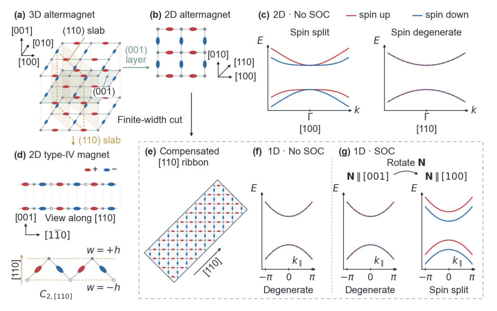
<figcaption class="paper-figure-caption"><b>Fig 1.</b> FIG. 1. Dimensional reduction and Néel-vector-controlled spin splitting in an ideal Lieb-based symmetry construction. (a) AA-stacked magnetic Lieb parent, with the selected (001) layer and (110) slab highlighted. (b) Two-dimensional Lieb altermagnet. (c) Nonrelativistic dis- persions showing spin splitting along [100] and degeneracy along [110]. (d) (110) slab realizing the type-IV limit through the spin-exchanging C2,[110] symmetry; solid and open gray sites mark the two nonmagnetic sublayers. (e) Compensated [110] ribbon with symmetry-related edges. (f) Non-SOC ribbon bands remain spin degenerate. (g) SOC locks spin to the lattice, so rotating N from [001] to [100] can activate symmetry-...</figcaption>
</figure>
<figure class="paper-figure-card">
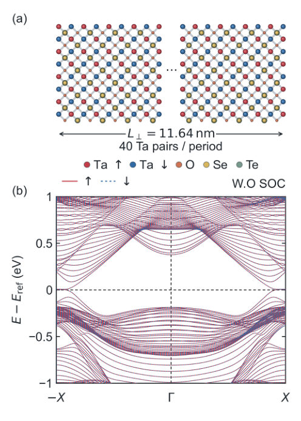
<figcaption class="paper-figure-caption"><b>Fig 2.</b> FIG. 2. Mirror-symmetric [110] Ta2TeSeO ribbon and non-SOC bands. (a) Ta-terminated ribbon with the central width omitted for clarity. (b) Wannier bands without SOC. Red solid and blue dashed curves are the two spin channels; black dashed lines mark Eref and Γ along −X–Γ–X.</figcaption>
</figure>
<figure class="paper-figure-card">
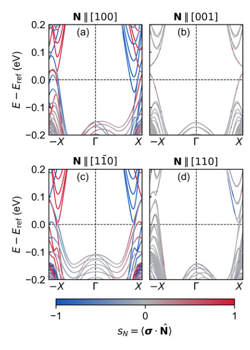
<figcaption class="paper-figure-caption"><b>Fig 3.</b> FIG. 3. SOC bands of the mirror-symmetric Ta-terminated [110] Ta2TeSeO ribbon for N ∥(a) [100], (b) [001], (c) [1¯10], and (d) [110]. Red and blue denote positive and negative spin projection sN = ⟨σ · ˆN⟩along the respective Néel axis. Light gray marks small projection, while dark gray marks states within 0.1 meV of another band. Panel (c) uses the C4z-related construction. The path is −X– Γ–X. Black dashed lines mark E −Eref = 0 and Γ, where Eref is the reference of each magnetic domain.</figcaption>
</figure>
<figure class="paper-figure-card">
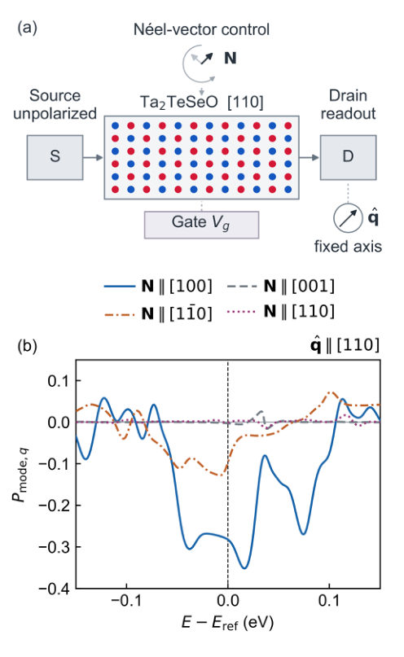
<figcaption class="paper-figure-caption"><b>Fig 4.</b> FIG. 4. Spin-polarized modes of the mirror-symmetric Ta-terminated [110] ribbon. (a) Gated two-terminal readout with fixed spin-analysis axis ˆq ∥[110]. (b) Right-moving-mode polarization Pmode,q(E) for N ∥[100], [001], [1¯10], and [110] in blue solid, gray dashed, orange dash-dotted, and purple dotted lines. Ideal conductance and numeri- cal details are given in the SM.</figcaption>
</figure>
</div>

<p><strong>Summary.</strong> This work explores how altermagnetism, typically identified by spin-split bands, can hide in one-dimensional magnetic nanoribbons due to geometric confinement. By incorporating Spin-Orbit Coupling (SOC), the authors demonstrate that a robust, SOC-driven spin splitting can reappear, establishing a mechanism for 1D altermagnetism hidden within seemingly conventional antiferromagnetic materials.</p>
<p><strong>Why it may be interesting.</strong> While focused on condensed matter magnetism, the concept of symmetry-protected topological phases and the interplay between lattice confinement and relativistic quantum effects (SOC) is relevant to understanding engineered quantum materials.</p>
<details>
<summary>Detailed structure</summary>
<p><strong>Main problem.</strong> The paper investigates how the diagnostic signature of altermagnetism (spin-split bands in nonrelativistic spectra) can disappear under one-dimensional (1D) confinement, and how relativistic spin splitting can reappear despite this nonrelativistic degeneracy.</p>
<p><strong>Main result.</strong> The study shows that 1D fully compensated altermagnetic functionality can exist, characterized by spin-degenerate nonrelativistic bands but sizable SOC-induced spin splitting when the Néel vector is oriented along specific crystal directions.</p>
<p><strong>Method.</strong> The research uses first-principles Wannier Hamiltonians with spin matrices to model the electronic structure and analyze the effect of symmetry operations on spin splitting.</p>
<p><strong>Model / system.</strong> The system studied is fully compensated [110] Ta2TeSeO nanoribbons, modeled using a Lieb-based construction, which is analyzed in the 1D limit.</p>
<p><strong>Key observables.</strong> Spin expectation value along the Néel vector ($\sigma \cdot \hat{N}$), SOC-induced spin splitting, and right-moving-mode spin polarization ($P_{	ext{mode},q}$).</p>
<p><strong>Important parameters / regimes.</strong> One-dimensional confinement, Néel-vector orientation ($\mathbf{N}$), and the presence/absence of Spin-Orbit Coupling (SOC).</p>
<p><strong>Assumptions / limitations.</strong> The analysis assumes the ribbon is wide enough to retain the parent easy-axis magnetic order, and transport calculations rely on ideal Landauer conductance models.</p>
<p><strong>Figures summary.</strong> Figures illustrate the dimensional reduction process, the spin-degenerate non-SOC bands, and the emergence of spin-split relativistic spectra for various Néel vector orientations, alongside mode polarization plots.</p>
<p><strong>Paper structure.</strong> The paper first establishes the theoretical problem of 1D confinement suppressing the altermagnetic signature, then uses a Lieb-based model to calculate the electronic structure, demonstrating the SOC-induced splitting, and finally analyzes the resulting spin polarization in transport measurements.</p>
</details>
<details>
<summary>Abstract</summary>
<p>Altermagnetism is normally identified by nonrelativistic spin-split bands in a compensated collinear magnet. Under one-dimensional confinement, however, this diagnostic can disappear: a boundary-compatible sublattice-exchange operation may leave the only Bloch momentum unchanged, forcing the nonrelativistic spin-up and spin-down spectra to coincide. We show that nonrelativistic spin degeneracy can coexist with relativistic spin splitting in a compensated one-dimensional magnet. In a Lieb-based construction, confinement along the diagonal cancels the projected $d$-wave spin splitting while preserving the real-space sublattice-exchange motif. Spin-orbit coupling (SOC) then locks spin to the lattice, so the Néel-vector orientation selects a magnetic line group that can reveal spin-split bands. Using fully compensated $[110]$ Ta$_2$TeSeO nanoribbons as a prototype, we find spin-degenerate nonrelativistic bands and sizable SOC splitting in the inherited easy-axis domain, $\mathbf N\parallel[100]$ or $[010]$. For sufficiently wide ribbons that retain the parent easy-axis order, this splitting is an equilibrium property. The easy-axis ribbon also supports a right-moving-mode spin polarization of about $35\%$ at finite ideal conductance. Our results establish one-dimensional fully compensated altermagnetic functionality hidden inside apparently conventional antiferromagnetic bands.</p>
</details>
<p><sub><a href="#top">↑ back to top</a></sub></p>

<p><a id="paper-2609.10687"></a></p>
<h3 id="quantum-interference-between-vortex-and-impurity-bound-states-boosts-thermoelectricity"><a href="http://arxiv.org/abs/2609.10687v1">Quantum interference between vortex- and impurity-bound states boosts thermoelectricity</a></h3>
<p><strong>Authors:</strong> Erik Haatuft, Jacob Linder<br>
<strong>Type:</strong> theory · <strong>Category:</strong> other · <strong>PDF:</strong> <a href="https://arxiv.org/pdf/2609.10687v1">https://arxiv.org/pdf/2609.10687v1</a><br>
<strong>Analysis basis:</strong> full PDF text, analyzed in chunks
<strong>Topic relevance:</strong> <code>Keldysh / 2PI / non-Gaussian methods</code> <strong>1/5</strong></p>
<div class="figure-strip-hint">↔ Scroll figures horizontally</div>
<div class="paper-figures-scroll">
<figure class="paper-figure-card">
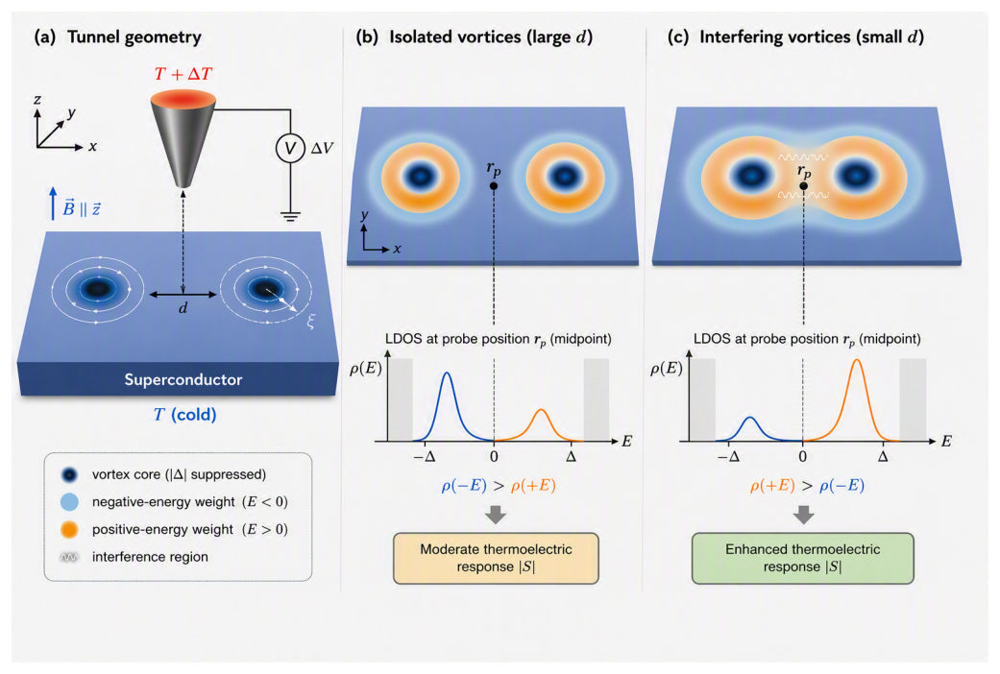
<figcaption class="paper-figure-caption"><b>Fig 1.</b> FIG. 1. Qualitative illustration of the system and the mechanism underlying the enhanced thermoelectric response. (a) A temperature-biased normal-metal probe couples locally to a type-II superconductor containing two vortices separated by a distance 𝑑. The thermally induced voltage difference Δ𝑉determines the local Seebeck response. (b) For well-separated vortices, the spatially extended vortex-bound states are approximately independent. (c) At smaller separation, the vortex-bound states overlap and interfere, reconstructing the local spectrum and enhancing its particle-hole asymmetry. In (b) and (c), the tilted surfaces represent the superconducting 𝑥𝑦-plane, while the orange and blue...</figcaption>
</figure>
<figure class="paper-figure-card">
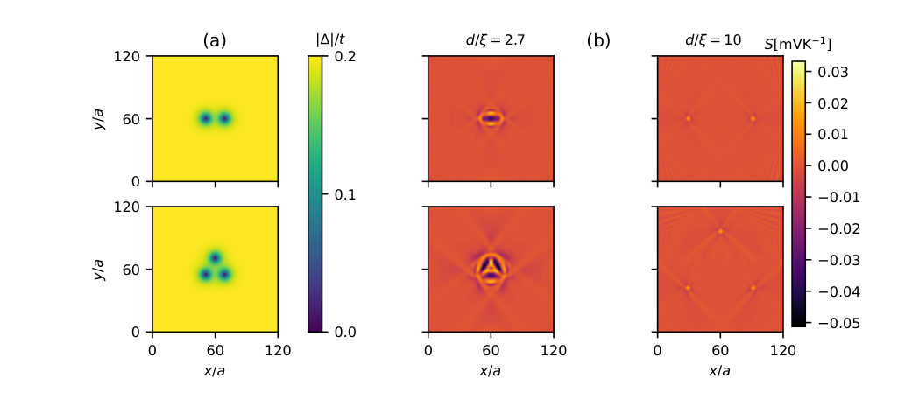
<figcaption class="paper-figure-caption"><b>Fig 2.</b> FIG. 2. (a): The chosen superconducting OP profiles, |Δ(𝒓)|, for two (top) and three (bottom) vortices. We have chosen the bulk OP Δ0 = 0.2𝑡 and the superconducting coherence length 𝜉0 = 6𝑎. (b): Two-dimensional heatmap of the spatially resolved Seebeck coefficient in an 𝑠-wave superconductor. Here we consider two cases: (left) the vortices are placed in close proximity at their minimum separation distance 𝑑min, and (right) when they are placed far apart.</figcaption>
</figure>
<figure class="paper-figure-card">
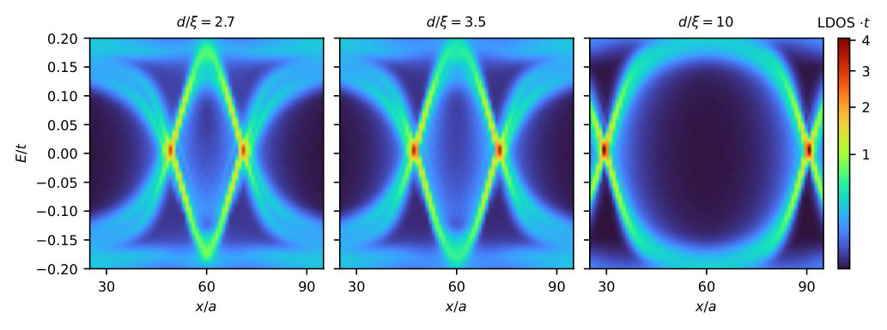
<figcaption class="paper-figure-caption"><b>Fig 3.</b> FIG. 3. LDOS as a function of energy and 𝑥along the intervortex line. The vortices are placed at 𝑥= 60𝑎± 𝑑. Note that the superconducting gap is at 𝐸= ±Δ = 0.2𝑡.</figcaption>
</figure>
<figure class="paper-figure-card">
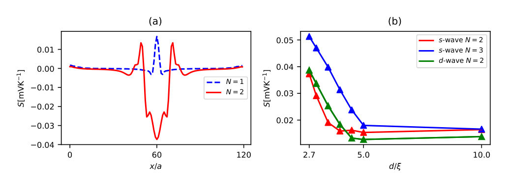
<figcaption class="paper-figure-caption"><b>Fig 4.</b> FIG. 4. (a): One-dimensional plot of the spatially resolved Seebeck coefficient along the intervortex line in the two-vortex case 𝑁= 2, corresponding to the upper left plot of Fig. 2 (b). For comparison, we have included calculations for a superconductor with a single vortex (𝑁= 1) located at the center of the system. (b): Maximum Seebeck coefficient attained in the superconductor as a function of the vortex separation distance. Here 𝑁denotes the number of vortices present in the superconductor.</figcaption>
</figure>
<figure class="paper-figure-card">
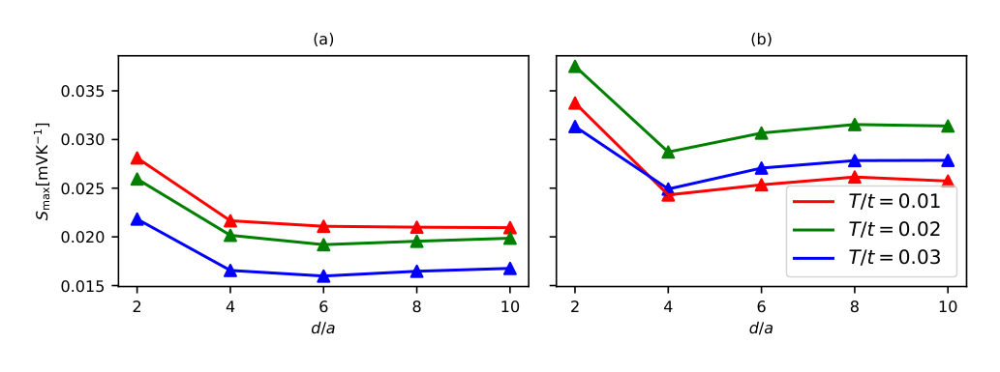
<figcaption class="paper-figure-caption"><b>Fig 5.</b> FIG. 5. Maximum Seebeck coefficient in the (a) 𝑠-wave and (b) 𝑑-wave superconductor as a function of impurity separation distance for different temperatures.</figcaption>
</figure>
</div>

<p><strong>Summary.</strong> This theoretical work explores how quantum interference between localized electronic states—specifically those bound by vortices or impurities—can dramatically boost the thermoelectric response in superconductors. Using the BdG framework, the authors demonstrate that the overlap of these defect states breaks particle-hole symmetry, offering a pathway to engineer local thermoelectric energy conversion in superconducting devices.</p>
<p><strong>Why it may be interesting.</strong> The focus on local transport properties (Seebeck coefficient) driven by quantum interference in superconducting defects provides a concrete, measurable physical mechanism for controlling electronic properties in superconducting materials.</p>
<details>
<summary>Detailed structure</summary>
<p><strong>Main problem.</strong> The study investigates how quantum interference between localized bound states induced by vortices or nonmagnetic impurities modifies the local thermoelectric response in superconductors.</p>
<p><strong>Main result.</strong> The thermoelectric response is strongly enhanced when defect-induced states overlap and interfere, particularly in the vortex case, suggesting that spatial structure controls local thermoelectricity.</p>
<p><strong>Method.</strong> The authors employed a lattice Bogoliubov-de Gennes approach combined with linear-response tunneling theory to calculate the spatially resolved density of states and Seebeck coefficient.</p>
<p><strong>Model / system.</strong> The system models $s$- and $d$-wave superconductors on a lattice, incorporating superconducting pairing, hopping terms, and perturbations from vortices (via Peierls substitution) or impurities (via site-dependent chemical potential).</p>
<p><strong>Key observables.</strong> Spatially resolved density of states ($
ho(\mathbf{r}, E)$) and the Seebeck coefficient ($S$).</p>
<p><strong>Important parameters / regimes.</strong> Vortex/impurity separation distance ($d$), superconducting pairing symmetry ($s$-wave vs. $d$-wave), and the coherence length ($\xi$).</p>
<p><strong>Assumptions / limitations.</strong> The calculations assume the linear-response regime and utilize a mean-field approximation for the superconducting state.</p>
<p><strong>Figures summary.</strong> Figures illustrate the enhancement of the Seebeck coefficient as vortex separation decreases, showing spectral reconstruction and LDOS changes; comparisons are made between vortex and impurity separation effects.</p>
<p><strong>Paper structure.</strong> The paper establishes the general suppression of thermoelectricity due to particle-hole symmetry, then analyzes the enhancement mechanism separately for overlapping vortex-bound states and for impurity-induced states, comparing the magnitude and spectral signatures of both effects.</p>
</details>
<details>
<summary>Abstract</summary>
<p>Thermoelectric effects in superconductors are generally suppressed by the approximate particle-hole symmetry of the quasiparticle spectrum, but can become pronounced near defects that host particle-hole asymmetric bound states. Here, we investigate how the local thermoelectric response is modified when multiple vortices or nonmagnetic impurities are brought into proximity. Using a lattice Bogolioubov-de Gennes approach combined with linear-response tunneling theory, we calculate the spatially resolved density of states and Seebeck coefficient in $s$- and $d$-wave superconductors. We find that the thermoelectric response can be strongly enhanced when spatially extended defect-induced states overlap. For vortices, this enhancement persists beyond the immediate core regions and originates from interference between vortex-bound states. For impurities, the thermoelectric response exhibits a comparable dependence on impurity separation in the $s$- and $d$-wave cases, although the associated spectral reconstruction is considerably more localized in the $s$-wave superconductor. Our results show that the spatial extent and interference of defect-induced quasiparticle states provide a means of controlling local thermoelectricity in inhomogeneous superconductors, with potential relevance for cryogenic thermoelectric sensing and energy conversion.</p>
</details>
<p><sub><a href="#top">↑ back to top</a></sub></p>
<h3 id="other-secondary-papers-7">Other secondary papers (7)</h3>
<details>
<summary>Show other secondary papers</summary>

<p><a id="paper-2609.11015"></a></p>
<h3 id="a-substrate-booster-for-p-type-2d-ferromagnetic-semiconductor"><a href="http://arxiv.org/abs/2609.11015v1">A substrate booster for P-type 2D ferromagnetic semiconductor</a></h3>
<p><strong>Authors:</strong> Hai Wang, Woye Pei, Ridong Cong, Xiaoyan Liu, Yuping Tian, Kenji Watanabe, Teng Yang, Takashi Taniguchi, Xiangru Kong, Weijiang Gong, Guowei Zhou, Xiaoxi Li, Hanwen Wang, Jixuan Wu, Jiezhi Chen, Xiaohong Xu, Tongyao Zhang<br>
<strong>Type:</strong> both · <strong>Category:</strong> strongly correlated electrons · <strong>PDF:</strong> <a href="https://arxiv.org/pdf/2609.11015v1">https://arxiv.org/pdf/2609.11015v1</a><br>
<strong>Analysis basis:</strong> full PDF text, analyzed in chunks</p>
<div class="figure-strip-hint">↔ Scroll figures horizontally</div>
<div class="paper-figures-scroll">
<figure class="paper-figure-card">
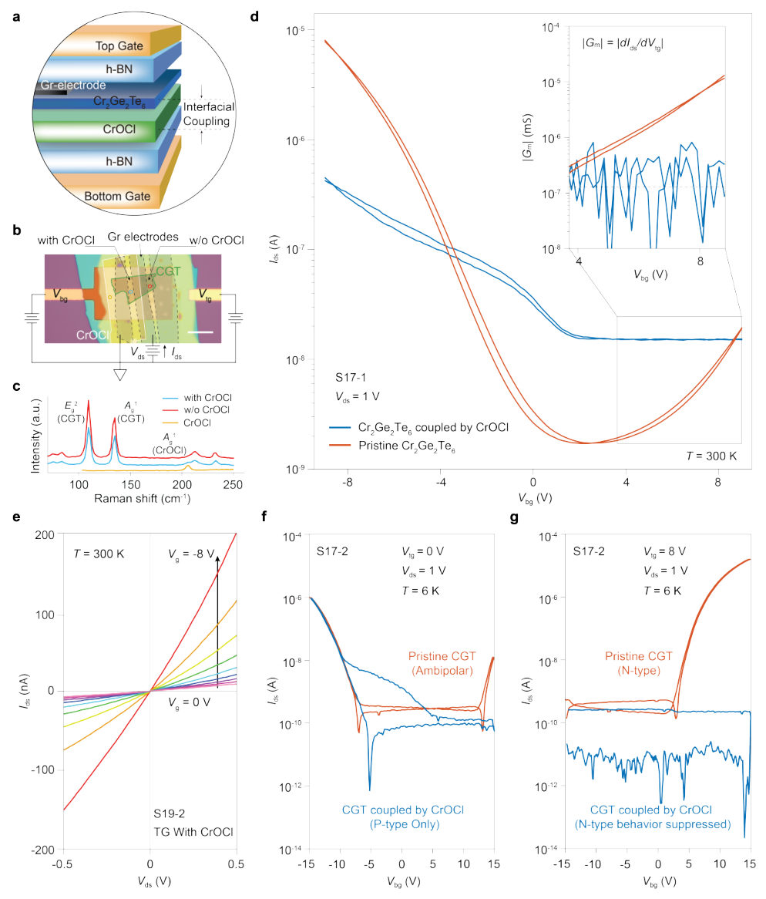
<figcaption class="paper-figure-caption"><b>Fig 1.</b> Figure 1. Characterization of CrOCl-coupled FL-CGT FETs. a, Schematic illustration of the dual-gated FET structure consisting of FL-CGT interfaced with a CrOCl underlayer. b, Optical image of a typical device and the configuration of measurement circuits. Solid outlines indicate the FL-CGT (green) and CrOCl (white) flakes, dashed black lines mean graphite electrodes. Scale bar, 10 µm. c, Raman spectra collected from the distinct regions marked by colored circles in (b). d, Room-temperature transfer characteristics Ids-Vbg of device S17-1, comparing the bare FL-CGT channel (red) with the CrOCl-coupled region (blue) at Vds = 1 V. The inset displays the magnitude of the transconductance (Gm)...</figcaption>
</figure>
<figure class="paper-figure-card">
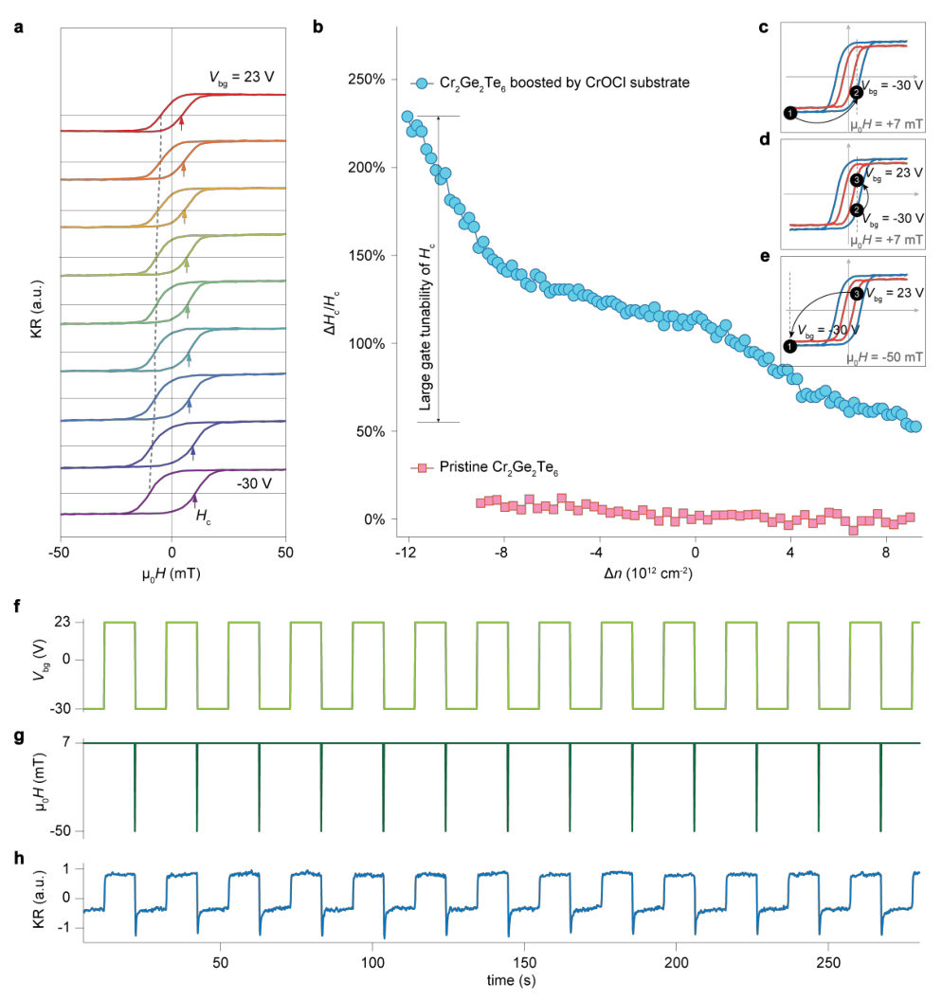
<figcaption class="paper-figure-caption"><b>Fig 2.</b> Figure 2. Giant gate-tunability of coercivity fields in CrOCl-coupled FL-CGT devices. a, Vertical stacking of magnetization hysteresis loops measured by MOKE from Vbg = −30 V to Vbg = 23 V at 6 K. The set gate Vtg = −14 V. A strong dependence of the coercive field (Hc) on the electric field is observed. b, Relative change in coercivity ∆Hc/Hc versus electrostatic doping ∆n. The CrOCl-coupled device (blue circles) exhibits a giant tunability of over 200%, significantly exceeding the negligible response of the pristine CGT device (pink squares). Data are normalized to the minimum Hc observed in the dual-gate map (Supplementary Figures 8). c - e, Schematic illustration of the electrically...</figcaption>
</figure>
<figure class="paper-figure-card">
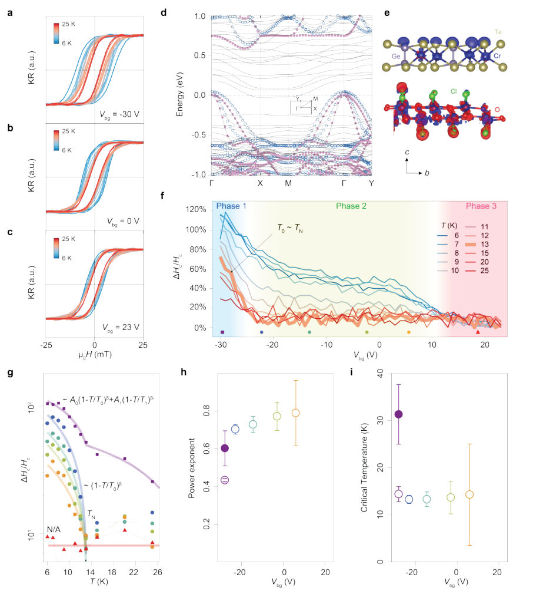
<figcaption class="paper-figure-caption"><b>Fig 3.</b> Figure 3. Temperature-dependent gate modulation of magnetic coercivity in CGT/CrOCl heterostructures. a–c, Temperature de- pendence of normalized KR hysteresis loops from 6 K to 25 K at Vbg = −30 V (a), 0 V (b), and 23 V (c), respectively. The top-gate voltage is fixed at Vtg = −14 V. a-c share the temperature color scale defined in f. d, Electronic band structure of CGT/CrOCl hy- brid (black lines). Solid purple and empty blue circles represent the spin majority and minority electronic bands of CGT monolayer, respectively. e, Differential charge density ∆ρ = ρ(CGT/CrOCl) −ρ(CGT) −ρ(CrOCl). Blue and red colors represent charge depletion and accumulation, respectively. CGT (top layer) is...</figcaption>
</figure>
<figure class="paper-figure-card">
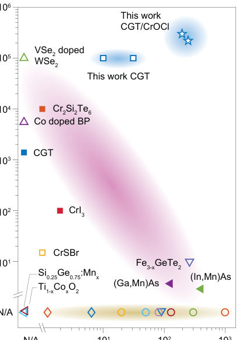
<figcaption class="paper-figure-caption"><b>Fig 4.</b> Figure 4. Perspectives on manipulation of charge and spin de- grees of freedom in FMS-based FETs. The diagram summarizes coercivity fields tunability and electrical FET ON-OFF ratios in several typical FMS-based FETs with using solid gates. Squares: 2D-FMS[9, 11, 10, 12], left-pointing triangles: DMS[5, 7, 6, 8], regular triangles: magnetic atom doped semiconductors[29, 30], inverted triangles: 2D ferromagnetic metals[31, 32], circles: fer- romagnetic films[33, 34, 35, 36, 37], diamond: ferromagnetic insulators[38, 39]. Data from devices in this work are included.</figcaption>
</figure>
</div>
<p><strong>Summary.</strong> This work introduces a novel substrate engineering approach by coupling a 2D ferromagnetic semiconductor ($    ext{Cr}_2   ext{Ge}_2   ext{Te}_6$) with an antiferromagnetic insulator ($   ext{CrOCl}$). This interface acts as a 'booster,' converting the device into a high-performance P-type FET. Crucially, the coupling allows for the electrical tuning of the magnetic coercive field by over 200%, demonstrating a powerful pathway for gate-tunable spintronic devices.</p>
<p><strong>Why it may be interesting.</strong> The ability to electrically tune magnetic anisotropy energy via interfacial charge transfer in a 2D system provides a solid-state platform for studying field-effect control over magnetic ground states, relevant to correlated electron physics.</p>
<details>
<summary>Detailed structure</summary>
<p><strong>Main problem.</strong> Developing functional spin transistors whose charge and spin properties are tunable via electric fields, which is challenging due to the inherent limitations of magnetic semiconductors.</p>
<p><strong>Main result.</strong> Interfacing the 2D ferromagnetic semiconductor $   ext{Cr}_2   ext{Ge}_2   ext{Te}_6$ with an antiferromagnetic insulator $    ext{CrOCl}$ creates a substrate booster that enables high-performance P-type FETs with giant gate-tunability of the magnetic coercive field ($>200\%$).</p>
<p><strong>Method.</strong> The study combines electrical transport measurements (FET characterization) with magnetic characterization using Polar MOKE microscopy, supplemented by DFT calculations to model interfacial charge transfer.</p>
<p><strong>Model / system.</strong> The physical system is a dual-gated Field-Effect Transistor (FET) heterostructure composed of few-layered $ ext{Cr}_2   ext{Ge}_2   ext{Te}_6$ (FL-CGT) coupled with an antiferromagnetic insulator $   ext{CrOCl}$. The mechanism relies on interfacial charge transfer coupling to modulate the magnetic anisotropy energy.</p>
<p><strong>Key observables.</strong> ON-OFF ratio, coercive field ($H_c$), transconductance ($G_m$), and the relative change in coercive field ($\Delta H_c/H_c$).</p>
<p><strong>Important parameters / regimes.</strong> Gate voltage ($V_{bg}$), temperature ($T$), and the coupling strength derived from interfacial charge transfer.</p>
<p><strong>Assumptions / limitations.</strong> The enhancement mechanism is attributed to an efficient interfacial charge transfer that acts as an active, electric-field-controlled modulator, rather than simple passive pinning.</p>
<p><strong>Figures summary.</strong> Figures demonstrate the p-type switching in the FET structure, show MOKE hysteresis loops illustrating $H_c$ dependence on $V_{bg}$, and present temperature-dependent scaling analyses of the coercivity tunability.</p>
<p><strong>Paper structure.</strong> The paper systematically presents the device structure, demonstrates the electrical switching to a p-type regime, quantifies the giant gate-tunability of the magnetic coercive field, and finally analyzes the temperature and doping dependence using critical scaling laws.</p>
</details>
<details>
<summary>Abstract</summary>
<p>Spin transistors with its both charge and spin properties tuned via electrostatic gating are believed capable for widespread use, which however have proven challenging due to the extreme rareness of their physical base -- magnetic semiconductors. The latter are limited within very few systems including diluted magnetic semiconductors (DMS) and two-dimensional ferromagnetic semiconductors (2D-FMS), and known to suffer from inadequate gate-tunability of their electric and/or magnetic properties. Here, we show a substrate engineering paradigm by interfacing few-layered Cr$_{2}$Ge$_{2}$Te$_{6}$ (FL-CGT) with an antiferromagnetic insulator CrOCl. Owing to the subtle interfacial charge transfer couplings, CGT can be drastically turned from an ambipolar semiconductor into a high performance P-type semiconductor. When cooled below the Curie temperature, the ON-OFF ratio in such substrate-boosted FMS field-effect transistor (FET) reaches 10$^{5}$ with its coercive field $H_{c}$ of magnetic hysteresis loop tunable by a factor of more than 200$\%$, enabling {gate-assisted magnetic switching in the prototype semiconducting spin transistor architecture}. A crossover from critical power-law scaling to a dual power-law behaviour under heavy hole doping was further observed. Our findings {signify} an efficient interfacial charge transfer and electrically modulated magnetic anisotropy energy supported by calculations. This high performance P-type FMS-FET system suggests that active substrate-boosting paradigm might be a powerful path for the investigation of future gate-tunable spintronic devices.</p>
</details>
<p><sub><a href="#top">↑ back to top</a></sub></p>

<p><a id="paper-2609.11459"></a></p>
<h3 id="bottom-up-synthesis-of-metastable-2d-hexagonal-copperi-iodide-on-monolayer-and-within-bilayer-graphene"><a href="http://arxiv.org/abs/2609.11459v1">Bottom-up Synthesis of Metastable 2D Hexagonal Copper(I) Iodide on Monolayer and within Bilayer Graphene</a></h3>
<p><strong>Authors:</strong> David Kaiser, Guobin Jia, Janis Köster, Sadegh Ghaderzadeh, Christian E. Halbig, Siegfried Eigler, Andrey Turchanin, Benjamin Dietzek-Ivanšić, Arkady V. Krasheninnikov, Jonathan Plentz, Elena Besley, Ute Kaiser<br>
<strong>Type:</strong> both · <strong>Category:</strong> other · <strong>PDF:</strong> <a href="https://arxiv.org/pdf/2609.11459v1">https://arxiv.org/pdf/2609.11459v1</a><br>
<strong>Analysis basis:</strong> full PDF text, analyzed in chunks</p>
<div class="figure-strip-hint">↔ Scroll figures horizontally</div>
<div class="paper-figures-scroll">
<figure class="paper-figure-card">
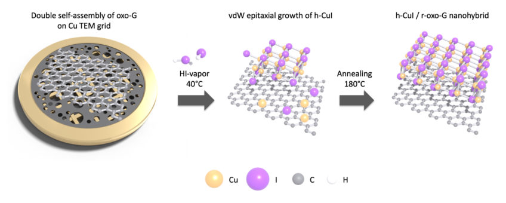
<figcaption class="paper-figure-caption"><b>Fig 1.</b> Figure 1. h-CuI synthesis on graphene supported by a copper TEM grid. In the first step, HI treatment at 40 °C forms, through van der Waals stabilization, monolayer h-CuI on graphene; during this step the oxo-graphene template (oxo-G) is reduced to r-oxo-G simultaneously. Annealing at 180 °C then promotes the epitaxial growth of extended h-CuI crystals on graphene. The atom types are indicated at the bottom.</figcaption>
</figure>
<figure class="paper-figure-card">
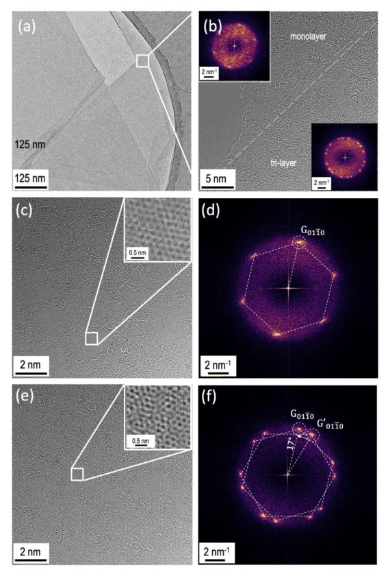
<figcaption class="paper-figure-caption"><b>Fig 2.</b> Figure 2. Structural and crystallographic characterization of oxo-G templates. (a) Low- magnification Cc/Cs-corrected HRTEM overview of oxo-G flakes suspended on a TEM grid, showing characteristic folds and local thickness variations. (b) Cc/Cs-corrected HRTEM image of the interface between a monolayer domain (top) and a trilayer domain (bottom), indicated by the white line; the insets show the corresponding FFT patterns. (c) Representative Cc/Cs-corrected HRTEM image of a monolayer oxo-G region; the inset shows an atomic-resolution view of the hexagonal lattice. (d) FFT pattern obtained from the region shown in (c), displaying the reflections of a single graphene lattice, labeled G and...</figcaption>
</figure>
<figure class="paper-figure-card">
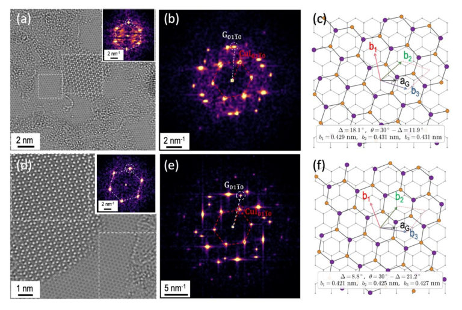
<figcaption class="paper-figure-caption"><b>Fig 3.</b> Figure 3. Vapor-phase synthesis and vdW-epitaxial growth of h-CuI on monolayer graphene. (a) Cc/Cs-corrected HRTEM image (80 kV) of an h-CuI crystallite (~5 nm) nucleated on monolayer graphene following HI treatment at 40 °C. The inset FFT of the adjacent substrate confirms the monolayer nature of the graphene template (G). (b) FFT of the heterostructure region displaying commensurate reflections from graphene (G, white) and h-CuI (red circles). (c) Schematic of the epitaxial registry at 40 °C: h-CuI on SLG with iodine atoms occupying graphene hollow sites at a twist angle of θ = 11.9° ± 1.0° (Sample 1). Views are reconstructed from experimental lattice vectors (b1, b2, b3) and measured...</figcaption>
</figure>
<figure class="paper-figure-card">
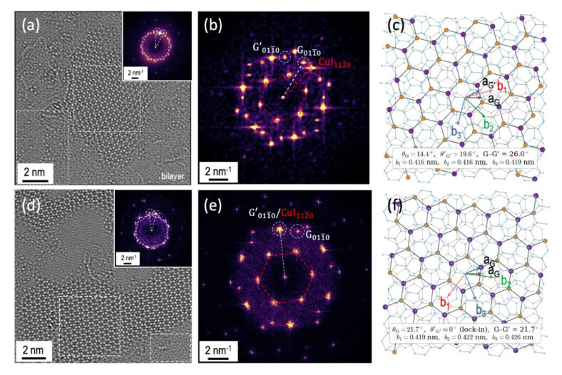
<figcaption class="paper-figure-caption"><b>Fig 4.</b> Figure 4. Intercalation and growth of h-CuI within twisted bilayer graphene. (a) Cc/Cs- corrected HRTEM image (80 kV) of an h-CuI crystallite intercalated between two graphene layers after HI treatment at 40 °C. The inset FFT of the adjacent region reveals two hexagonal graphene lattices (G, G′) with a relative twist angle of 26.0° ± 1.0°, confirming the bilayer template. (b) FFT of the triple-layer heterostructure displaying reflections from both graphene layers (G, G′, white) and the intercalated h-CuI (red circles). (c) Structural schematic of the 40 °C configuration (Sample 3): h-CuI is sandwiched between G and G′ with epitaxial twist angles θ = 14.4° and θ′ = 19.6° (defined as the...</figcaption>
</figure>
<figure class="paper-figure-card">
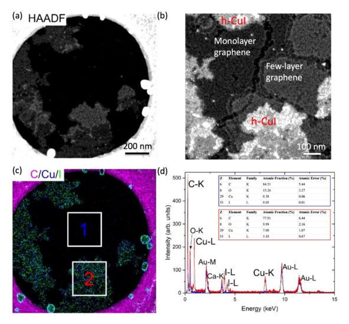
<figcaption class="paper-figure-caption"><b>Fig 5.</b> Figure 5. Elemental and stoichiometric characterization via STEM-EDX. (a) HAADF-STEM overview of the graphene flakes spanning the holey-carbon support, with extended areas of h- CuI; the bright particles are residual gold contamination (Supporting Information, Section S1). (b) Magnified view of the area in (a) at higher contrast, showing h-CuI domains (labeled) on both monolayer and few-layer graphene regions. (c) Composite EDX map of carbon (magenta), copper (blue), and iodine (green); Cu and I co-localize in the crystal-covered regions, whereas in the crystal-free region 1 both fall by one to two orders of magnitude. (d) Representative EDX spectrum acquired from the h-CuI domain labeled...</figcaption>
</figure>
</div>
<p><strong>Summary.</strong> This paper reports a novel, low-temperature vapor-phase method to grow metastable 2D hexagonal Copper(I) Iodide (h-CuI) directly onto graphene. The research combines synthesis, advanced microscopy, and DFT/AIMD calculations to confirm the structural integrity and electronic stabilization of this semiconductor/graphene hybrid. This establishes a promising platform for next-generation wide-bandgap electronic and optoelectronic devices.</p>
<p><strong>Why it may be interesting.</strong> The study provides a detailed understanding of interfacial electronic and structural coupling between a semiconductor and a 2D material, which is crucial for designing novel heterostructures for optoelectronics.</p>
<details>
<summary>Detailed structure</summary>
<p><strong>Main problem.</strong> The primary goal was to establish a bottom-up, low-temperature synthesis route for the metastable 2D hexagonal Copper(I) Iodide (h-CuI) directly onto chemically inert graphene templates.</p>
<p><strong>Main result.</strong> The authors successfully synthesized and characterized epitaxial h-CuI domains on both monolayer and bilayer reduced oxo-graphene (r-oxo-G) using a vapor-phase process, confirming its stability and structure.</p>
<p><strong>Method.</strong> The work combines experimental synthesis (HI vapor exposure and annealing) with advanced characterization (HRTEM, STEM-EDX) and theoretical modeling (DFT calculations and AIMD simulations).</p>
<p><strong>Model / system.</strong> The system involves the epitaxial growth of h-CuI, a wide-bandgap semiconductor, on graphene substrates (SLG and BLG). Theoretical studies model the van der Waals adhesion energy and vibrational dynamics within these heterostructures.</p>
<p><strong>Key observables.</strong> Atomic structure, local twist angles, lattice anisotropy, Cu:I stoichiometry, van der Waals adhesion energy ($ ext{E}<em xy>{    ext{vdW}}$), and Mean-Square Displacements ($   ext{MSD}</em>_z$).},  ext{MSD</p>
<p><strong>Important parameters / regimes.</strong> Low synthesis temperatures ($180^\circ	ext{C}$), which prevent the formation of the bulk $\gamma$-phase; the stabilization energy provided by van der Waals adhesion.</p>
<p><strong>Assumptions / limitations.</strong> The growth is limited by remaining interfacial adsorbates, and AIMD simulations are restricted to specific time segments.</p>
<p><strong>Figures summary.</strong> Figures illustrate the two-step synthesis process, structural characterization of the graphene templates, and the resulting epitaxial growth of h-CuI on the graphene layers.</p>
<p><strong>Paper structure.</strong> The paper details the synthesis method, presents structural characterization comparing growth on SLG vs. BLG, quantifies the adhesion energy using DFT, and analyzes the thermal stability and vibrational properties using AIMD simulations.</p>
</details>
<details>
<summary>Abstract</summary>
<p>Copper(I) iodide (CuI) is a wide-bandgap semiconductor crystallizing in the 3D $γ$-phase under ambient conditions; its layered van der Waals bulk phase $β$-CuI is stable only between 643 and 673 K. The two-dimensional (2D) h-CuI form has been obtained via liquid-phase exfoliation of mechanochemically prepared precursors and via encapsulation between graphene sheets, whereas bottom-up growth of 2D h-CuI on open surfaces has not yet been demonstrated. Here, we report a vapor-phase synthesis of h-CuI directly on low-defect, large-area monolayer and within bilayer reduced oxo-graphene (r-oxo-G) at low temperatures. Using a copper TEM grid as the solid-state precursor for copper, HI-vapor exposure at 40 $°$C initiates nucleation, while annealing at 180 $°$C promotes the growth of extended h-CuI domains. Aberration-corrected HRTEM resolves the atomic structure, local twist angles, and lattice anisotropy of the CuI/r-oxo-G nanohybrid, while STEM-EDX yields a Cu:I ratio consistent with 1:1. First-principles calculations show that van der Waals adhesion to graphene stabilizes the supported hexagonal layer. Under the presented low-temperature precursor conditions, pathways for nucleation of the $γ$-phase are not available, allowing the hexagonal phase to form selectively at the graphene interface. Ab initio molecular dynamics simulations show that the heterostructure retains its hexagonal lattice order at 600 K, including on an open monolayer graphene support. The lateral extent of the growth is limited mainly by remaining interfacial adsorbates. These results establish a route to metastable 2D h-CuI on a chemically inert graphene template, which may be useful for wide-bandgap electronic and optoelectronic devices.</p>
</details>
<p><sub><a href="#top">↑ back to top</a></sub></p>

<p><a id="paper-2609.11666"></a></p>
<h3 id="competition-between-vacancy-creation-and-filling-in-defect-engineering-of-hbn"><a href="http://arxiv.org/abs/2609.11666v1">Competition between vacancy creation and filling in defect-engineering of hBN</a></h3>
<p><strong>Authors:</strong> Shrirang Chokappa, Manuel Laängle, Barbara Maria Mayer, Vladimir Zoba\vc, Jacob Madsen, Diana Propst, David Lamprecht, Philipp Irschik, Arixin Bo, Clara Kofler, Vinzent Hana, Fabian Kraft, Clemens Mangler, Lado Filipovic, Toma Susi, Jani Kotakoski<br>
<strong>Type:</strong> both · <strong>Category:</strong> other · <strong>PDF:</strong> <a href="https://arxiv.org/pdf/2609.11666v1">https://arxiv.org/pdf/2609.11666v1</a><br>
<strong>Analysis basis:</strong> full PDF text, analyzed in chunks</p>
<div class="figure-strip-hint">↔ Scroll figures horizontally</div>
<div class="paper-figures-scroll">
<figure class="paper-figure-card">
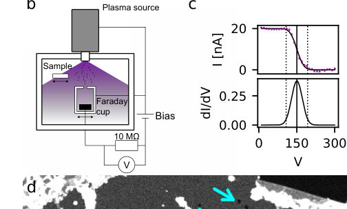
<figcaption class="paper-figure-caption"><b>Fig 1.</b> FIG. 1. Sample cleaning, plasma set-up and beam energy pro- file. (a) MAADF-STEM image of heat treated (250◦C/180 min) freestanding, monolayer hBN before irradiation. The darkest con- trast corresponds to vacuum, the second-darkest to monolayer hBN, and all brighter features are hydrocarbon or metal contamination, or multilayers. (b) Schematic representation of the plasma irradiation setup and Faraday cup used to measure the energy profile. (c) Top: Background-subtracted ion current I (purple circles) and fitted beam energy profile (dI/dV ) (black line) as a function of the bias voltage (V ). Bottom: Absolute value of the derivative of the fit representing the energy spread. (d) MAADF-STEM...</figcaption>
</figure>
<figure class="paper-figure-card">

<figcaption class="paper-figure-caption"><b>Fig 2.</b> FIG. 3. Defect density and distribution. (a) Intrinsic defect density as a function of the defect size (number of missing atoms). (b) Post- irradiation defect density as a function of the defect size (number of missing atoms). 11,500 nm2 of valid area was analysed before and 17,400 nm2 after the irradiation. The inset shows a magnified view of the defect density for impurity atom substitutions with the lowest densities.</figcaption>
</figure>
<figure class="paper-figure-card">

<figcaption class="paper-figure-caption"><b>Fig 3.</b> FIG. 2. Semi-automated STEM imaging. (a) STEM-MAADF overview image of a freestanding, thermally cleaned, irradiated sam- ple region. The darkest contrast is clean, freestanding hBN and the brighter contrast corresponds to contamination or multilayer regions. The gray squares mark planned imaging positions within the user- defined region. (b) 64×64 nm2 image of a part of the imaged re- gion where vacancy filling by silicon atoms can be seen, indicated with cyan circles. The red circle indicates a pore created where the electron beam was parked after the semi-automatic imaging. (c) Ex- ample individual frames from the semi-automated image acquisition, with their corresponding grid coordinates...</figcaption>
</figure>
<figure class="paper-figure-card">

<figcaption class="paper-figure-caption"><b>Fig 4.</b> FIG. 4. Example STEM-MAADF images and correspond- ing image simulations of typical defects acquired by the semi- automated imaging tool. Two sets of images displaying raw images on the top, band-pass (BP) filtered (Fourier-space mask around the first-order diffraction spots) in the middle, and image simulations on the bottom. In the filtered images, the vacancy-type defects have been denoted with a solid coloured circle that represents the missing atoms (boron in red and nitrogen in green), and substitutional atoms have been circled. The raw and filtered images have been intensity- adjusted to portray the defects better. The multislice image simula- tions were made with the open-source...</figcaption>
</figure>
</div>
<p><strong>Summary.</strong> This research investigates the controlled defect engineering of monolayer hBN using ultra-low-energy ion irradiation to create quantum emitter sites. The authors report that experimental defect creation deviates significantly from theoretical predictions, highlighting the complex role of impurity-induced vacancy filling. The study is vital for advancing the reliable synthesis and characterization of defect-based quantum materials.</p>
<p><strong>Why it may be interesting.</strong> The work directly addresses the material science challenges in creating quantum emitters by providing empirical data on defect control, which is crucial for understanding localized electronic states relevant to quantum physics.</p>
<details>
<summary>Detailed structure</summary>
<p><strong>Main problem.</strong> The primary goal is to achieve selective creation and characterization of specific point defects in hexagonal boron nitride (hBN) for use as a host for quantum emitters, as a direct correlation between defect structure and quantum emission properties is currently lacking.</p>
<p><strong>Main result.</strong> Experimental irradiation predominantly creates boron single vacancies (V_B), which contradicts previous simulation predictions, and the process is complicated by significant, uncontrolled vacancy filling by impurity atoms like Silicon.</p>
<p><strong>Method.</strong> The study combines experimental techniques, including ultra-low-energy Ar+ ion irradiation and STEM imaging, with computational analysis using CNNs and molecular dynamics simulations.</p>
<p><strong>Model / system.</strong> The physical system is monolayer hBN, which is prepared via electrochemical delamination and analyzed after controlled irradiation with low-energy noble gas ions. The analysis compares experimental defect statistics against theoretical predictions from collision simulations.</p>
<p><strong>Key observables.</strong> Defect density and distribution (e.g., V_B, V_N, Si_B), mean intensity profiles across atomic arrangements, and displacement threshold energies.</p>
<p><strong>Important parameters / regimes.</strong> Irradiation energy ($\approx 150$ eV), ion fluence ($0.8 \pm 0.2 	ext{ ions}\cdot	ext{nm}^{-2}$), and defect concentrations ($  ext{V}<em ext_N="ext{N">{    ext{B}}$ vs. $  ext{V}</em>$).}</p>
<p><strong>Assumptions / limitations.</strong> The analysis relies on the assumption that observed intensity variations can be modeled by atomic displacement, electron beam interactions, and potential impurity substitution (e.g., Oxygen for Nitrogen).</p>
<p><strong>Figures summary.</strong> Figures illustrate sample preparation, STEM imaging setups, defect density comparisons (pre- vs. post-irradiation), and simulation results comparing ideal, vibrating, and oxygen-substituted atomic arrangements.</p>
<p><strong>Paper structure.</strong> The paper progresses from establishing the need for controlled defect creation in hBN, detailing the experimental irradiation and characterization methods, presenting quantitative comparisons between observed and simulated defect densities, and finally delving into advanced image analysis to interpret the nature of the observed defects.</p>
</details>
<details>
<summary>Abstract</summary>
<p>Hexagonal boron nitride (hBN) has recently become the focus of intense research as a material that can host quantum emitters. It is known that such emission is related to point defects, but in order to conclusively correlate specific defects to their spectra, having control over the defect creation mechanism is required. Here, we prepare freestanding, monolayer hBN samples and irradiate them with ultra-low-energy (150 eV) Ar+ ions. The samples are characterized before and after irradiation via scanning transmission electron microscopy to assess the defect density and distribution. Contrary to what analytical potential molecular dynamics simulations have predicted, we predominantly observe boron single vacancies after ion irradiation, followed by double vacancies at half the count. Moreover, we also observe that vacancy filling with Si and C impurity atoms plays a more significant role in the created defects than previously assumed, potentially posing a problem for selective creation of quantum emitters in hBN.</p>
</details>
<p><sub><a href="#top">↑ back to top</a></sub></p>

<p><a id="paper-2609.10953"></a></p>
<h3 id="emergence-of-spin-orbit-coupling-among-spin-atomic-orbital-and-bloch-dynamics-in-janus-double-transition-metal-mxenes"><a href="http://arxiv.org/abs/2609.10953v1">Emergence of spin-orbit coupling among spin, atomic orbital, and Bloch dynamics in Janus double-transition-metal MXenes</a></h3>
<p><strong>Authors:</strong> Tetsuro Habe<br>
<strong>Type:</strong> theory · <strong>Category:</strong> other · <strong>PDF:</strong> <a href="https://arxiv.org/pdf/2609.10953v1">https://arxiv.org/pdf/2609.10953v1</a><br>
<strong>Analysis basis:</strong> full PDF text, analyzed in chunks</p>
<div class="figure-strip-hint">↔ Scroll figures horizontally</div>
<div class="paper-figures-scroll">
<figure class="paper-figure-card">

<figcaption class="paper-figure-caption"><b>Fig 1.</b> FIG. 1. The schematics of Janus double-transition-metal MX- enes, M2HfC2OS for M =Mo and W. The left and right panels present the top view and side view of the monolayer. The z- axis is implemented the perpendicular direction to the layer plane.</figcaption>
</figure>
<figure class="paper-figure-card">

<figcaption class="paper-figure-caption"><b>Fig 2.</b> FIG. 2. The band structures of Janus MXene, M2HfC2OS, and inversion-symmetric MXenes, M2HfC2O2. In (a) and (b), the bands of Mo2HfC2OS and W2HfC2OS are presented, respectively. The lower panels gives the dispersion within the boxes in the upper panels. In (c) and (d), those of Mo2HfC2O2 and W2HfC2O2 are presented, respectively.</figcaption>
</figure>
<figure class="paper-figure-card">

<figcaption class="paper-figure-caption"><b>Fig 3.</b> FIG. 3. The first-principles band structures in the absence of the spin-orbit coupling. In (a) and (b), the spinless bands of Mo2HfC2OS and W2HfC2OS are presented, respectively. The size of symbol represents the amplitude of atomic orbitals in transition-metal elements.</figcaption>
</figure>
<figure class="paper-figure-card">

<figcaption class="paper-figure-caption"><b>Fig 4.</b> FIG. 4. The band structures obtained utilizing the effective model in Eq. (1) with the spin-orbit coupling. In (a), only the LS coupling is present. In (b)-(c), the band structure is presented by the solid line with one of the three terms, HR soc, Hxy soc, and Hz soc, switched on.</figcaption>
</figure>
<figure class="paper-figure-card">

<figcaption class="paper-figure-caption"><b>Fig 5.</b> FIG. 5. The band structures obtained using the effective model in Eq. (17) with the parameters in tableIII. In (a) and (b), those for Mo2HfC2OS and W2HfC2OS (solid-lines) are presented, respectively, with the first-principles bands (dashed-lines).</figcaption>
</figure>
</div>
<p><strong>Summary.</strong> This theoretical study investigates how spin-orbit coupling (SOC) manifests in Janus MXenes, revealing a complex correlation between spin, orbital, and Bloch dynamics. The key finding is the emergence of a unique, trigonally patterned spin-momentum locking that deviates significantly from conventional SOC models. This suggests these materials are promising platforms for advanced spintronic applications.</p>
<p><strong>Why it may be interesting.</strong> The finding of a novel, trigonally locked spin-momentum coupling mechanism, distinct from standard symmetries, provides a new platform for engineering spin-related phenomena in 2D materials, which is highly relevant for advanced spintronics.</p>
<details>
<summary>Detailed structure</summary>
<p><strong>Main problem.</strong> The study investigates the emergence of spin-orbit coupling (SOC) and its resulting correlation among electronic spin, orbital, and Bloch dynamics in specific Janus double-transition-metal MXenes.</p>
<p><strong>Main result.</strong> The SOC leads to a unique, trigonally alternating spin-momentum locking pattern with the spin axis perpendicular to the layer plane, which cannot be described by conventional SOC forms like Rashba or Dresselhaus couplings.</p>
<p><strong>Method.</strong> The authors employed first-principles DFT calculations combined with the development and analysis of a reduced, effective three-band model Hamiltonian near the $\Gamma$ point.</p>
<p><strong>Model / system.</strong> The physical system is the Janus double-transition-metal MXenes ($  ext{Mo}<em ext_LS="ext{LS">2   ext{HfC}_2  ext{OS}$ and $  ext{W}_2    ext{HfC}_2  ext{OS}$). The model involves deriving and diagonalizing an effective Hamiltonian that incorporates multiple SOC terms ($ ext{H}</em>$, etc.) to capture the complex spin-orbital coupling.}}^{  ext{soc}}$, $   ext{H}_{    ext{R}}^{   ext{soc}</p>
<p><strong>Key observables.</strong> Spin-split band structure, staggered spin configuration with a trigonal pattern, and the spin polarization angle ($\theta$) as a function of momentum ($k$).</p>
<p><strong>Important parameters / regimes.</strong> The ratio of coupling constants ($\rho$) is crucial for accurate polarization, and the analysis is performed under the low-energy and small wave number condition.</p>
<p><strong>Assumptions / limitations.</strong> The analysis relies on developing an effective model Hamiltonian parameterized by first-principles DFT results, and the initial functional choice (non-hybrid) was noted to underestimate the band gap.</p>
<p><strong>Figures summary.</strong> Figures compare band structures calculated with and without SOC, showing the characteristic spin-split dispersion and the trigonal anisotropy around the $\Gamma$ point. Another figure illustrates the spin angle ($\theta$) dependence on momentum.</p>
<p><strong>Paper structure.</strong> The paper progresses from initial DFT calculations establishing the SOC effects in Janus MXenes, to developing a comprehensive effective Hamiltonian that includes multiple coupling terms, and finally analyzing the resulting unique spin-momentum locking and polarization patterns.</p>
</details>
<details>
<summary>Abstract</summary>
<p>We found a spin-orbit coupling to cause a simultaneous correlation among three degrees of freedom, the electronic spin, orbital, and Bloch dynamics in an investigation into the electronic structure of Janus double-transition-metal MXenes, Mo$_2$HfC$_2$OS and W$_2$HfC$_2$OS. In this paper, it is also revealed that the spin-orbit coupling causes a staggered spin configuration with a trigonal pattern around the $Γ$ point near the insulating gap. We developed a reduced Hamiltonian describing the electronic states and show that the spin-orbit coupling cannot be equated with conventional forms for a single electron in solids, LS, Rashba, and Dresselhaus couplings, even in the approximation under the low-energy and small wave number condition. Because of the intrinsic shape of the conduction band, a trigonally alternating spin-momentum locking emerges with the spin axis perpendicular to the layer plane. The theoretical analysis shows that these Janus materials can provide a platform for exploring the spin-related phenomena due to the trigonal spin-momentum locking other than Rashba and Dresselhaus types.</p>
</details>
<p><sub><a href="#top">↑ back to top</a></sub></p>

<p><a id="paper-2609.11861"></a></p>
<h3 id="high-fidelity-kmath1221mathp-representations-of-first-principles-electronic-band-structures-through-covariant-renormalization"><a href="http://arxiv.org/abs/2609.11861v1">High-fidelity k$\cdot$p representations of first-principles electronic band structures through covariant renormalization</a></h3>
<p><strong>Authors:</strong> Kristian Berland<br>
<strong>Type:</strong> theory · <strong>Category:</strong> other · <strong>PDF:</strong> <a href="https://arxiv.org/pdf/2609.11861v1">https://arxiv.org/pdf/2609.11861v1</a><br>
<strong>Analysis basis:</strong> full PDF text, analyzed in chunks</p>
<div class="figure-strip-hint">↔ Scroll figures horizontally</div>
<div class="paper-figures-scroll">
<figure class="paper-figure-card">

<figcaption class="paper-figure-caption"><b>Fig 1.</b> FIG. 1. Bare k·p band structures of GaP plotted against the DFT reference bands. The 4-band model, includes the valence bands triplet and one conduction band, the rest starts from the lowest state.</figcaption>
</figure>
<figure class="paper-figure-card">

<figcaption class="paper-figure-caption"><b>Fig 2.</b> FIG. 3. Renormalized k·p bands of GaP compared with the bare 15-band model. The full path (a) and magnified (b), (c) close to VBM at the two Γ passages. The shade indicates the 0.3-eV energy window of the fit. Only 15-band models are displayed in (b) and (c).</figcaption>
</figure>
<figure class="paper-figure-card">

<figcaption class="paper-figure-caption"><b>Fig 3.</b> FIG. 2. Bare k·p vs DFT for zincblende AlN band structures, with a zoom (lower panel), extending 70% of the way out to W and to K about the Γ valence-band maximum.</figcaption>
</figure>
<figure class="paper-figure-card">

<figcaption class="paper-figure-caption"><b>Fig 4.</b> Figure 3 compares k·p renormalized models with the bare 15-band model and the DFT reference. The renor- malized models appear virtually indistinguishable from the DFT within the energy-range used for fitting. Figure 4 and Table I provides the corresponding val- ues of the loss function, Eq. (10). They reveal that the renormalized models, unlike the bare models, continue to improve with number of bands used in the basis. Note that the specific number of bands used is selected in part to ensure a certain energy distance between the degener- ate multiplets. Once an accurate model is constructed, it can be eval- uated on meshes far denser than the reference calcula-</figcaption>
</figure>
<figure class="paper-figure-card">

<figcaption class="paper-figure-caption"><b>Fig 5.</b> FIG. 4. RMS errors of k·p models within the fitting regime. The left vertical axis indicate energy errors, while the right indicate velocity errors (as indicated by the arrows).</figcaption>
</figure>
</div>
<p><strong>Summary.</strong> This paper presents a novel covariant renormalization technique to dramatically improve the accuracy of k.p models used to calculate electronic band structures from first-principles data. By renormalizing the momentum matrix spectra, the method overcomes the convergence and non-locality issues of traditional k.p approaches. It successfully reproduces band structures for semiconductors like GaP and AlN, even generalizing to systems with strong spin-orbit coupling.</p>
<p><strong>Why it may be interesting.</strong> While focused on solid-state physics, the renormalization technique itself is a sophisticated parameter fitting and model reduction technique applicable to any physical system described by an effective Hamiltonian where high-fidelity data is available.</p>
<details>
<summary>Detailed structure</summary>
<p><strong>Main problem.</strong> The standard k.p method for electronic band structure suffers from slow convergence with the number of bands and inaccuracies when the underlying Hamiltonian is nonlocal.</p>
<p><strong>Main result.</strong> The authors introduce a covariant renormalization scheme that significantly improves the accuracy of k.p models, allowing for the reproduction of band structures and density of states with high fidelity.</p>
<p><strong>Method.</strong> The core method involves renormalizing the eigenvalue spectra of the Hermitian momentum matrices using a loss function that balances energy and velocity errors against DFT reference data.</p>
<p><strong>Model / system.</strong> The study applies to the electronic band structures of various semiconductors, including GaP, AlN (zincblende and wurtzite), and PbTe, covering systems with and without strong spin-orbit coupling.</p>
<p><strong>Key observables.</strong> Band energies, band velocities, Density of States (DOS), and hole conductivity.</p>
<p><strong>Important parameters / regimes.</strong> The required number of bands (e.g., 15 to 66 bands for AlN) and the fitting energy window are critical parameters.</p>
<p><strong>Assumptions / limitations.</strong> The renormalization process assumes that scaling the gauge-invariant eigenvalue spectra preserves degeneracies and crystal symmetry, and that the model can be accurately described by a renormalized k.p Hamiltonian.</p>
<p><strong>Figures summary.</strong> Figures compare bare vs. renormalized k.p models across different band counts for GaP and AlN, demonstrating improved agreement with DFT. They also show the generalization to SOC systems like PbTe and the ability to generate full-zone models.</p>
<p><strong>Paper structure.</strong> The paper first establishes the limitations of raw k.p models, then details the covariant renormalization scheme, validates it on multiple materials (GaP, AlN, PbTe), and finally demonstrates its utility in generating compact, full-zone models for transport calculations.</p>
</details>
<details>
<summary>Abstract</summary>
<p>The k$\cdot$p method can be applied directly to first-principles energies and momentum matrix elements, but the resulting models converge slowly with the number of bands and are inexact wherever the underlying Hamiltonian is nonlocal. We show that both limitations can be largely removed by renormalizing the eigenvalue spectra of the Hermitian momentum matrices. These spectra are gauge invariant, and are identical for symmetry-related Cartesian components, hence scaling the recurring magnitudes provides a modest set of parameters that preserves degeneracies and crystal symmetry without needing to construct a symmetry-adapted basis. We choose to renormalize the models against reference eigenvalues and band velocities on rays out of a high-symmetry point. For GaP, a 15-band model can reproduce the band structure in the near-gap reference regions within a few meV. For zincblende and wurtzite AlN, similar accuracy requires 30- or 66-band models, which in the case of zincblende is traced to the strong warping in the [110] direction. The scheme readily generalizes to rocksalt PbTe, which includes spin-orbit coupling, and has L-centered valence and conduction band extrema. Further, we demonstrate, for GaP, how compact four-band Hamiltonians can be obtained by downfolding within the same renormalization scheme. Moreover, by changing the fitting regime to encompass the entire Brillouin zone, the scheme can be used to generate full-zone models that reproduce the density of states. The practical utility is illustrated with a 59-band k.p model for GaP, which can be evaluated on meshes far denser than the reference calculation, that in turn can be used both to resolve fine features in the density of states and to compute the hole conductivity at low temperature.</p>
</details>
<p><sub><a href="#top">↑ back to top</a></sub></p>

<p><a id="paper-2609.11017"></a></p>
<h3 id="in-plane-magnetic-field-control-of-anomalous-hall-response-enabled-by-magnetic-anisotropy-engineering"><a href="http://arxiv.org/abs/2609.11017v1">In-plane magnetic field control of anomalous Hall response enabled by magnetic anisotropy engineering</a></h3>
<p><strong>Authors:</strong> J. C. Rodriguez E., E. De Biasi, J. I. Facio, D. Salomoni, S. Auffret, R. C. Sousa, I. L. Prejbeanu, A. Bruchhausen, J. Curiale, L. Avilés-Félix<br>
<strong>Type:</strong> experiment · <strong>Category:</strong> other · <strong>PDF:</strong> <a href="https://arxiv.org/pdf/2609.11017v1">https://arxiv.org/pdf/2609.11017v1</a><br>
<strong>Analysis basis:</strong> full PDF text, analyzed in chunks</p>
<div class="figure-strip-hint">↔ Scroll figures horizontally</div>
<div class="paper-figures-scroll">
<figure class="paper-figure-card">

<figcaption class="paper-figure-caption"><b>Fig 1.</b> FIG. 1. Sample structure and magneto-transport response in Tb/Co multilayers. a) Schematic of TbCo(0.9) ferrimagnetic multilayers. b) The temperature-evolution of the transverse (ρxy) resistivity as a function of magnetic field in out-of-plane (OOP) field sweep for the TbCo(0.9) multilayers Hall bar. c) The temperature dependence of the transverse (ρxy) resistivity (black open squares) and the coercive fields (blue open circles) extracted from the different measurement shown in panel b) for the same sample. The ρxy for each temperature shown in panel b) is also highlighted.</figcaption>
</figure>
<figure class="paper-figure-card">

<figcaption class="paper-figure-caption"><b>Fig 2.</b> FIG. 2. Longitudinal (ρxx) and transverse (ρxy) resistivities as function of the polar angle of the external magnetic field (θH). Panels a) and c) show the longitudinal and transverse resistivities, respectively, as a function of the θH measured at 280 K and 600 mT. Panels b) and d) show the corresponding resistivities measured at 190 K and 800 mT, respectively. Symbols represent the experimental data, while dashed lines correspond to simulations based on the S–W model. e) Normalized Fourier amplitude of the angular dependence of ρxx acquired at 280 K and 190 K shown in panels a) and c). f) Normalized Fourier amplitude of the angular dependence of ρxy acquired at 280 K and 190 K shown in...</figcaption>
</figure>
<figure class="paper-figure-card">

<figcaption class="paper-figure-caption"><b>Fig 3.</b> FIG. 3. Longitudinal (ρxx) and transverse (ρxy) resistivity as a function of in-plane field orientation. Panels a) and c) show the longitudi- nal and transverse resistivities, respectively, as a function of the θH measured at 280 K and 600 mT. Panels b) and d) show the corresponding resistivities measured at 190 K and 800 mT, respectively. Symbols represent the experimental data, while dashed lines correspond to simu- lations based on the S–W model. The short dash lines shown in panels c) and d) correspond to the deviation of the the equilibrium polar angle θM from the equatorial plane obtained by the S-W model as the in-plane magnetic field rotates. e) Normalized Fourier amplitude of the...</figcaption>
</figure>
</div>
<p><strong>Summary.</strong> This work reports on magnetotransport studies of Tb/Co multilayers where the magnetic anisotropy has been engineered to be tilted. The key finding is that this built-in tilt breaks symmetry, enabling the anomalous Hall effect to be controlled by applying an in-plane magnetic field. This establishes the material as a promising platform for advanced Hall effect sensors.</p>
<p><strong>Why it may be interesting.</strong> While focused on condensed matter magnetism, the concept of using engineered anisotropy to control symmetry-breaking mechanisms that govern transport responses (like AHE) has parallels in controlling quantum states or coupling strengths in quantum devices.</p>
<details>
<summary>Detailed structure</summary>
<p><strong>Main problem.</strong> The study aims to control the anomalous Hall response in magnetic multilayers using an in-plane magnetic field by engineering the magnetic anisotropy.</p>
<p><strong>Main result.</strong> The anomalous Hall effect observed under an in-plane field originates from the tilt of the uniaxial anisotropy axis, which breaks symmetry and allows for in-plane field control over the out-of-plane AHE sign.</p>
<p><strong>Method.</strong> Magnetotransport measurements of anomalous Hall resistivity ($
ho_{xy}$) and longitudinal resistivity ($
ho_{xx}$) are performed as a function of external magnetic field angle and temperature.</p>
<p><strong>Model / system.</strong> The physical system is a ferrimagnetic [Tb/Co] multilayer grown with a Tb thickness gradient, inducing a wedge-shaped tilt in the uniaxial anisotropy axis. The analysis is supported by a simplified macrospin model.</p>
<p><strong>Key observables.</strong> Anomalous Hall resistivity ($
ho_{xy}$), longitudinal resistivity ($
ho_{xx}$), coercive field ($H_C$), and angular dependence of transport coefficients.</p>
<p><strong>Important parameters / regimes.</strong> Temperature range (80 K to 300 K), in-plane field orientation ($\phi_H$), and the degree of anisotropy tilt.</p>
<p><strong>Assumptions / limitations.</strong> The analysis relies on a simplified macrospin model, and the AHE is assumed to be dominated by the Co sublattice in the measured temperature window.</p>
<p><strong>Figures summary.</strong> Figures show $
ho_{xy}$ loops revealing spin reorientation transitions, and angular dependence measurements ($
ho_{xx}, 
ho_{xy}$ vs. angle) demonstrating the influence of the tilted anisotropy.</p>
<p><strong>Paper structure.</strong> The paper systematically investigates magnetotransport responses ($
ho_{xx}, 
ho_{xy}$) under both out-of-plane and in-plane field rotations, using angular dependence analysis and comparison with a macrospin model to pinpoint the role of the anisotropy tilt.</p>
</details>
<details>
<summary>Abstract</summary>
<p>Engineering magnetic anisotropy provides a powerful route to control magnetization orientation and unlock emerging functionalities in opto-spintronic and current-driven devices. Beyond its role in magnetization reversal, the effective anisotropy can strongly influence the magnetotransport response, offering an additional degree of freedom to tune new device functionalities. In this work, we report a magnetotransport study of a ferrimagnetic [Tb/Co]$_{\times 5}$ multilayer grown with a Tb thickness gradient, whose wedge-shaped tilts the uniaxial anisotropy axis slightly away from the film normal. Anomalous Hall resistivity measurements from 80 K to 300 K reveal a spin reorientation transition, while the angular dependence of the magnetotransport responses exposes the crucial role of the tilted anisotropy. A simplified macrospin model reproduces the full angular response across the transition and shows that the observed anomalous Hall effect when the in-plane magnetic field is applied originates from the tilt of the uniaxial anisotropy axis, which supplies a built-in symmetry-breaking mechanism, enabling in-plane field control over the out-of-plane anomalous Hall response, sign included. These findings establish tilted magnetic anisotropy as a promising route toward Hall effect-based sensor applications and highlight Tb/Co multilayers as a versatile platform for anisotropy-engineered spintronic devices.</p>
</details>
<p><sub><a href="#top">↑ back to top</a></sub></p>

<p><a id="paper-2609.11096"></a></p>
<h3 id="self-similar-vector-solitons-for-the-coupled-higher-order-nonlinear-schrodinger-equations-in-inhomogeneous-optical-fibers"><a href="http://arxiv.org/abs/2609.11096v1">Self-similar vector solitons for the coupled higher-order nonlinear Schrodinger equations in inhomogeneous optical fibers</a></h3>
<p><strong>Authors:</strong> Houria Triki, Vladimir I. Kruglov<br>
<strong>Type:</strong> theory · <strong>Category:</strong> other · <strong>PDF:</strong> <a href="https://arxiv.org/pdf/2609.11096v1">https://arxiv.org/pdf/2609.11096v1</a><br>
<strong>Analysis basis:</strong> full PDF text, analyzed in chunks</p>
<div class="figure-strip-hint">↔ Scroll figures horizontally</div>
<div class="paper-figures-scroll">
<figure class="paper-figure-card">

<figcaption class="paper-figure-caption"><b>Fig 1.</b> FIG. 1. Evolution of intensity wave profiles of the soliton solutions (27) and (28) with parameters α = −0.02, σ = 1, β2 = −0.471, β3 = 0.6, γ = 1.26, q = 0.01, η0 = 0 (a) bright soliton solution (27) and (b) W-shaped soliton solution (28). Intensity profiles of (c) bright soliton solution (27) and (d) W-shaped soliton solution (28).</figcaption>
</figure>
<figure class="paper-figure-card">

<figcaption class="paper-figure-caption"><b>Fig 2.</b> FIG. 2. Evolution of intensity wave profiles of the soliton solutions (35) and (36) with parameters α = 0.04, σ = 1, β2 = −0.471, β3 = 0.6, γ = −0.355, q = 0.01, η0 = 0 (a) kink soliton solution (35) and (b) antikink soliton solution (36). Intensity profiles of (c) kink soliton solution (35) and (d) antikink soliton solution (36).</figcaption>
</figure>
<figure class="paper-figure-card">

<figcaption class="paper-figure-caption"><b>Fig 3.</b> FIG. 3. Evolution of vector self-similar solitons with parameters D3(z) = D0 cos(hz), Γ(z) = Γ0, D0 = 3.31, h = 1, k = 1, ρ0 = 1, p = 1, Γ0 = 0, η0 = t0 = 0 (a) self-similar bright wave (57) (b) self-similar W-shaped wave (58) (c) self-similar kink wave (61) (d) self-similar antikink wave (62). Other parameters are same as those in Figs. 1 and 2, respectively.</figcaption>
</figure>
<figure class="paper-figure-card">

<figcaption class="paper-figure-caption"><b>Fig 4.</b> FIG. 4. Evolution of vector self-similar solitons with parameters D3(z) = D0[z cos(z2)−z3 sin(z2)], Γ(z) = Γ0, D0 = −1, k = 1, ρ0 = 1, p = 1, Γ0 = 0, η0 = t0 = 0 (a) self-similar bright wave (57) (b) self-similar W-shaped wave (58) (c) self-similar kink wave (61) (d) self-similar antikink wave (62). Other parameters are same as those in Figs. 1 and 2, respectively.</figcaption>
</figure>
<figure class="paper-figure-card">

<figcaption class="paper-figure-caption"><b>Fig 5.</b> FIG. 5. Evolution of vector self-similar solitons with parameters D3(z) = D0 cos(hz), Γ(z) = Γ0sin(z), D0 = 3.31, h = 1, Γ0 = 0.1, k = 1, ρ0 = 1, p = 1, η0 = t0 = 0 (a) self-similar bright wave (57) (b) self-similar W-shaped wave (58) (c) self-similar kink wave (61) (d) self-similar antikink wave (62). Other parameters are same as those in Figs. 1 and 2, respectively.</figcaption>
</figure>
</div>
<p><strong>Summary.</strong> This theoretical work analyzes the existence of self-similar vector solitons in optical fibers whose properties vary along the propagation direction. By solving the coupled higher-order nonlinear Schrödinger equations using similarity transformations, the authors demonstrate that the pulse dynamics can be precisely controlled by tuning the distributed dispersion and gain/loss parameters. This provides a powerful framework for managing light pulses in complex, real-world optical media.</p>
<p><strong>Why it may be interesting.</strong> The mathematical techniques used (similarity transformations on variable-coefficient PDEs) are highly relevant to modeling complex, non-uniform physical systems encountered in quantum optics and nonlinear wave physics.</p>
<details>
<summary>Detailed structure</summary>
<p><strong>Main problem.</strong> The paper aims to prove the existence and analyze the dynamics of self-similar vector solitons propagating in inhomogeneous optical fibers.</p>
<p><strong>Main result.</strong> Two types of self-similar vector solitons—bright-W-shaped and kink-antikink waveforms—were found, demonstrating that pulse control can be achieved by manipulating the distributed third-order dispersion and gain/loss parameters.</p>
<p><strong>Method.</strong> The authors employed the similarity transformation method to reduce the variable-coefficient coupled Higher-Order Nonlinear Schrödinger equations into solvable forms, allowing for the derivation of exact analytical solutions.</p>
<p><strong>Model / system.</strong> The system models light pulse propagation in inhomogeneous optical fibers, governed by coupled higher-order nonlinear Schrödinger (HNLS) equations that incorporate varying second/third-order dispersions, self/cross-phase modulation, and gain/loss effects.</p>
<p><strong>Key observables.</strong> Bright-W-shaped and kink-antikink soliton waveforms, pulse intensity profiles, and the evolution of the pulse shape and trajectory.</p>
<p><strong>Important parameters / regimes.</strong> Distributed third-order dispersion parameter ($D_3(z)$) and the gain/loss coefficient, which are key factors controlling the pulse shape and intensity, respectively.</p>
<p><strong>Assumptions / limitations.</strong> The analysis relies on using specific ansatz solutions and making assumptions about the functional form of the variable coefficients (e.g., periodic or exponential profiles).</p>
<p><strong>Figures summary.</strong> Figures illustrate the intensity evolution of the found soliton solutions, showing profiles for bright/W-shaped solitons and kink/antikink solitons under various parameter settings.</p>
<p><strong>Paper structure.</strong> The paper introduces the coupled HNLS equations, applies similarity transformations to handle variable coefficients, derives general self-similar wave solutions, and then analyzes the dynamics under specific parameter variations (periodic or exponential dispersion/loss).</p>
</details>
<details>
<summary>Abstract</summary>
<p>We prove the existence of two kinds of self-similar vector solitons in an inhomogeneous optical fiber medium, where light propagation is governed by a pair of coupled higher-order nonlinear Schrodinger equations with varying second- and third-order dispersions, self- and cross-phase modulation non linearities, self-steepening, and linear gain/loss effects. The newly found self-similar waves comprise bright-W-shaped and kink-antikink waveforms with nonvanishing amplitudes. As a practical exam ple, we discuss the propagation dynamics of these soliton structures in a periodically distributed fiber system as well as an exponential dispersion-decreasing fiber. The results demonstrate that the parameter functions of gain/loss and third-order dispersion serve as a key factor in determining the nonlinear dynamics of self-similar vector solitons. In particular, we find that precise control over the shape and dynamic evolution of self-similar pulses can be achieved through a proper choice of the distributed third-order dispersion parameter, while the gain/loss coefficient controls their intensity.</p>
</details>
<p><sub><a href="#top">↑ back to top</a></sub></p>
</details>

<hr>
<p>
<a href="index.html">← Index</a>
 · <a href="papers_06.html">← Previous</a>
</p>
<hr>

</body>
</html>
